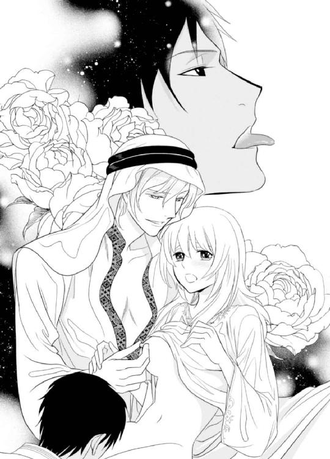
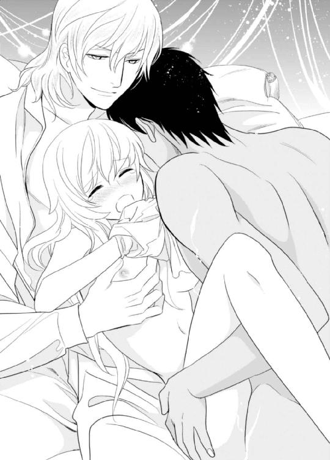
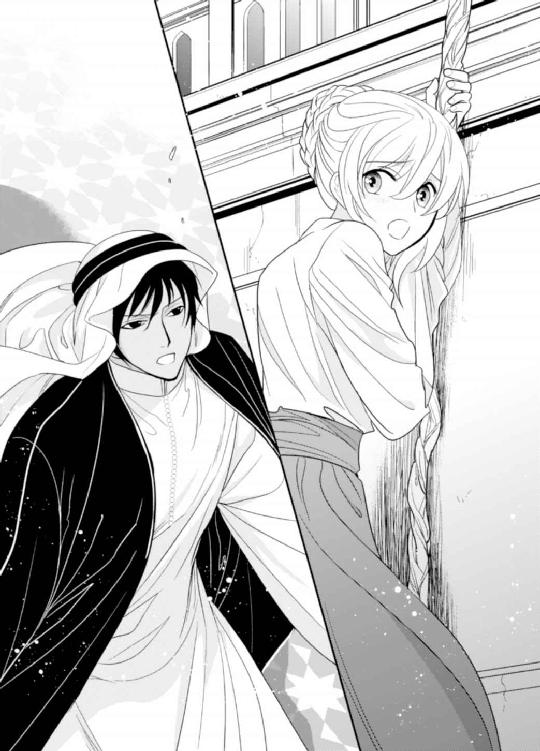
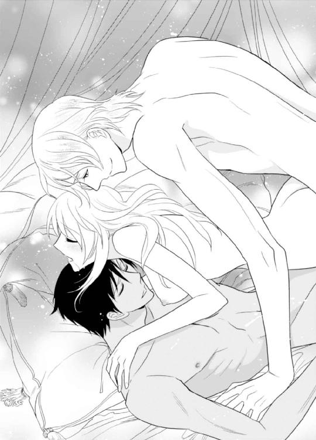
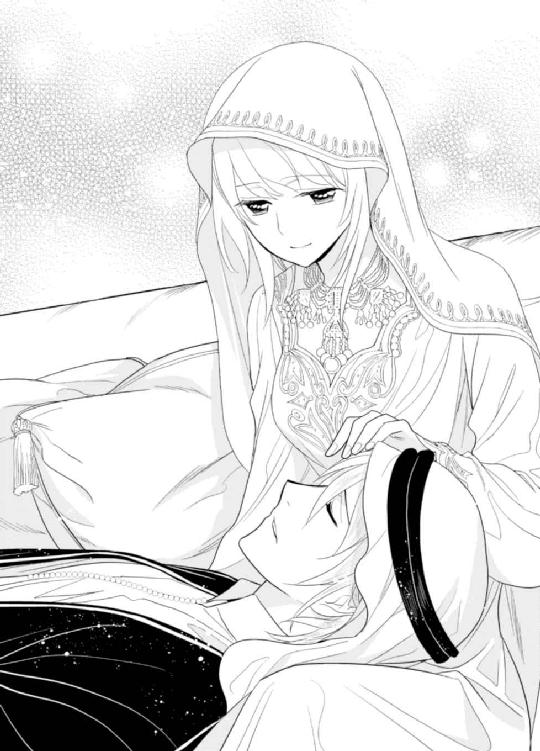
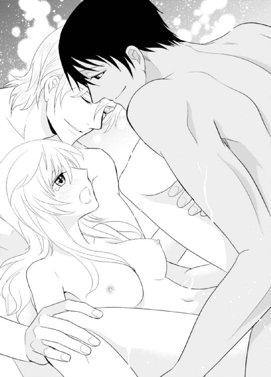
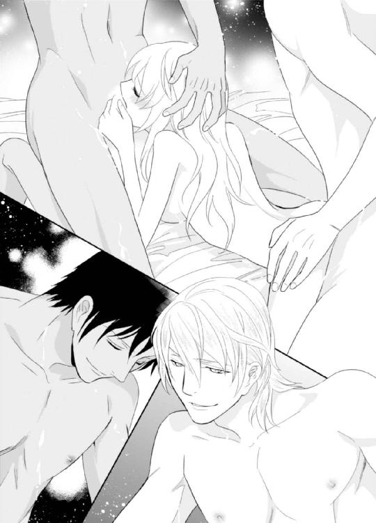
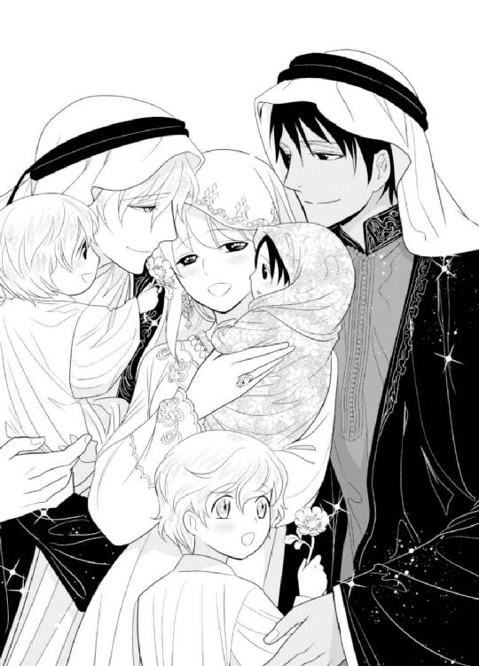
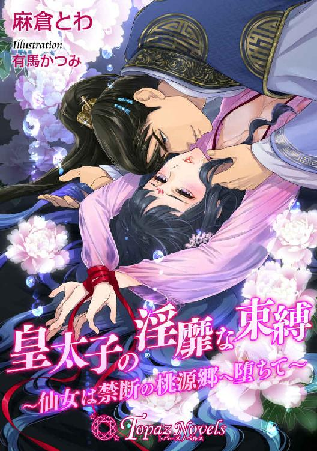

| 二人のシークとハレムの秘された甘い夜【書下ろし・イラスト8枚入り】 (トパーズノベルス) | |
| 茅原ゆみ | |
| アイデジタルパブリッシング (2016) | |
トパーズノベルス
二人のシークとハレムの秘された甘い夜
著作 茅原ゆみ
Illustration 緒田涼歌
この物語はフィクションであり、実在の人物・団体・事件とは一切関係ありません。
二人のシークとハレムの秘された甘い夜
「お前は我らのものだ──」
麝香にも似た甘い香りが、寝室を満たしている。
ユリアの細い肢体は天蓋付きの豪奢なベッドに横たえられ、二人の男の視線に晒されていた。
「あっ、いや......っ」
背後からユリアを抱き締めていた第一王子アサードが、薄絹でできたユリアの夜着を胸元まで捲り上げる。
「お、おやめくださいっ。アサード様っ」
白くたわわな乳房とともに、薄い下生えが露わになった。腕で隠そうとするが、優しく両手首を拘束されて動けない。
「足をもっと開いて。ユリア」
正面からベッドに乗り上げてきた第二王子ファリスに足首を掴まれ、ユリアは激しく左右に頭を振った。そんな恥ずかしいこと、できるわけがない。
するとユリアの耳に舌を差し入れ、ねっとりと耳殻を舐め上げたアサードが、蜂蜜を流し込むように甘く囁いた。
「我が儘を言って我らを困らせるな......。お前の蜜壺がどれだけ濡れているのか、ファリスによーく確かめてもらえ」
喉奥で笑われて、ユリアは全身がかぁっと熱くなった。
（こんなこと、本当は嫌なのに──）
そう思うのに、毎夜彼らに甘美な快楽を教え込まれ、煌めくような愉悦を知ってしまったユリアの身体は、そろそろと足を開き出す。
「もっとだよ。もっとよく見えるように大きく開いて......」
「は、はい......」
熱っぽいファリスの言葉に、ユリアは羞恥に震えながら膝を曲げ、さらに大きく足を開いた。
「なんだ、やればできるじゃないか！」
アサードが嬉しそうにユリアを褒めた。濃い紅茶に、ミルクをたっぷりと溶かし込んだような淡褐色の肌をした彼は、西洋絵画の天使を思わせる豊かな金色の巻き毛と、深い海を彷彿とさせる青い瞳をしていた。
「さぁ、褒美をやるぞ」
真っ赤に染まったユリアの頬にキスをすると、アサードはユリアの顎を捕らえ、荒々しく唇を重ねてきた。
「んっ......、んんっ......」
巧みな動きを見せる彼の舌が、口腔深くまで差し入れられる。
敏感な舌先をきゅっと吸われ、身体がビクンと跳ね上がった。それと同時に両の乳房を鷲掴みにされ、円を描くように揉み込まれる。
「あっ、だめっ......」
赤く色付いた小さな乳首を、指の腹で転がすようにいじられて、ユリアの背中が大きく撓った。
「すごい......。ユリアのここ、こんなに蜜を垂らして」
感嘆したように呟きながら、ファリスがユリアの媚肉にそっと触れた。
「なんだ。胸をいじられただけでそんなに濡らしてしまったのか？ しょうがない奴だな」
からかうようにアサードに笑われ、ユリアの眦に涙が浮かんだ。それをファリスに唇で吸い取られ、触れるようなキスを繰り返される。
「ふ、......ぅん」
強引で荒々しい兄のアサードとは違い、ファリスのキスはいつも優しい──。
啄むように何度も唇を重ね、歯列を舐め上げると、ファリスはユリアの口腔に舌を滑り込ませてきた。
「ふぁ......、あ......っ」
同時に薄い下生えをもてあそぶように撫で擦られて、蜜口からとろり......と蜜が溢れ出す。
「感じているんだね、ユリア──」
知られてしまったことに、再び顔が焼けるように熱くなったが、褐色の肌に精悍な顔付きをしたファリスにふんわりと微笑まれ、なぜか胸がきゅんとなる。
しかし胸のときめきに浸る間もなく、彼はすっと身を屈めると、濡れそぼったユリアの秘処に顔を近付けた。
「い、いけませんわ......っ、ファリス様！」
驚いたユリアが膝を閉じようとしたが、逞しい彼の身体が足の間に割り込んでいて、閉じることができない。
わざとらしくぴちゃぴちゃと水音を立てると、ファリスは濡れそぼったユリアの花襞を舐め始めた。
「だ、だめぇ......っ」
敏感になった襞を辿るようにされて、ユリアは身を捩らせた。
けれどファリスはユリアの両腿を大きな手で掴むと、もっとユリアを追い立てようと、限界まで足を開かせ、くすぐるように花芯を舌先で突く。
「ひぃ......っ」
ファリスの節の立った指が、トロトロと蜜を溢れさせている花びらを押し広げて、ゆっくりと挿入された。
「あぁっ、......う、......うぅんっ」
膣襞を押し伸ばすように何度も隘路を行き来され、ユリアの踵がシーツを蹴る。
アサードの爪先まで整えられた美しい指が、固く凝ったユリアの乳首や薄く色付く乳輪を、摘まんだり弾いたりしてもてあそぶ。
「あっ、あぁ......、アサード様......、ファリス様......っ」
焼けつくような快感が全身を支配し、知らぬ間にユリアは腰を揺らめかせてしまっていた。
「──もっと啼け、ユリア。我らを満足させるように」
首筋を強く吸われながら、アサードに両の乳首をぴんっと引っ張られた。
「ひゃ......、ぅんっ」

甘美な電流が背筋を駆け抜け、ユリアはもっといじってほしいと言わんばかりに、柔らかな膨らみを突き出してしまう。
「いっぱい感じて、ユリア。君のいやらしいところがもっと見たい......」
指を増やし、膣筒への抜き差しを激しくさせたファリスに、ユリアは悦楽の涙を溜めながら、大きく頭を振った。
「もう、だめ......です。もう、あぁ......っ」
黄金と大理石でできた宮殿に閉じ込められて、ユリアは毎夜カナリアのように啼かされた。
憎き男の娘として囚われ、蹂躙され、それでも優しく自分を甘やかす彼らに戸惑いながらも、ユリアは今夜も美しい兄弟に抱かれて、月夜の砂漠で淫靡な歌を歌うのだった──。
＊＊＊
船から降り立ち、ユリアは異国の空を見上げた。
青く澄んだ空は地平線の彼方で海と混じり合い、どこまでも果てしない。カモメの鳴く声が耳に心地よく、海風が優しく頬を撫でていく。しかしユリアの白い肌を焼く太陽の日差しは、実に強烈だった。
ここはアラビア半島に位置する砂と交易の国、ハスィール王国──。
六年ぶりにこの地に降り立ったユリアは、今回は国賓として招かれているので、扱いは最上級だった。
「ユリア・ジェファーソン様ですね」
炎天下の中、アラビア特有の民族衣装を身に纏った男が、深々と頭を下げた。その身なりは質素でありながら上質な物で、王宮からの迎えであることは一目瞭然だ。
「......は、はい」
戸惑いながらも頷いたユリアを恭しく案内すると、男は強い日差しを受けて反射する黒塗りの馬車の扉を開けた。
金細工が随所に施された馬車はとても美しく、足を踏みれることすら躊躇われてしまうが、それでも勇気を出して乗り込む。中は涼しく、緑色のビロードが張られたソファは驚くほど座り心地が良くて、ユリアはほぅっ......とため息をついてしまった。
滑るように走り出した馬車は、活気ある港町の景色を車窓に映しながら、王宮へと向かった。
ユリアがこの地に戻って来たのは、父の葬儀に出席するためだった。
イギリス人であるユリアは、考古学者の父に連れられて、六年前までハスィール王国で暮らしていた。しかし十二歳の時に父と母が離婚し、ユリアは母に連れられて、母国イギリスに帰っていたのだ。
しかし母方の家は貴族とはいえ、祖父の代に没落し、その生活は大変貧しく、慎ましやかなものだった。なのでユリアは近所の子爵家で、家庭教師として職を得ていたのだが、扱いはベビーシッターも同然で、時には侍女のように扱われた。
それでもユリアは、決して現状を嘆いたりはしなかった。どんなに辛いことや悲しいことがあっても、大好きな本さえ読めれば幸せだったからだ。
だからユリアは、仕事のない日は足しげく図書館へ通い、童話から歴史書、冒険譚から東洋の異聞録まで、ありとあらゆる本を読み漁った。
本は、ユリアが知らないことをたくさん教えてくれた。しかも知恵の翼まで授けてくれる。
本さえ読んでいれば、ユリアは辛く厳しい現実を忘れることができたのだ。
しかし昨年の秋に母が病で亡くなり、父も亡くし、ユリアは天涯孤独の身となってしまった。
オアシスでにぎわう市場を窓越しに眺めながら、大きなエメラルドグリーンの瞳は、不安と孤独に揺れていた。
（これから私、どうなってしまうのかしら......）
じわりと浮かんだ涙をそっと拭うと、気丈にもユリアは顔を上げた。
（考えていてもしかたがないわ。一人で生きる道を探さなきゃ──）
前方に、黄金と大理石でできた国王の住まいであるマージャル宮殿が見えてきた。
桜色の唇をきゅっと引き結ぶと、ユリアは折れそうになる心を必死に奮い立たせ、灼熱の太陽を受けて輝く宮殿を、じっと見つめたのだった。
ペルシア湾を臨むハスィール王国は、メソポタミア文明とインダス文明を結ぶ交易拠点であったことから、多くの遺跡が点在し、考古学者にとって垂涎の土地だった。
「──中でもジェラール・カラ遺跡は、当時の人達の生活を色濃く残した遺跡で......。父は夢中になって研究をしていました」
宮殿の敷地の最奥にあるハレム内に用意された客室で、ユリアは侍女に丁寧に髪を梳かれていた。
金細工で縁取られた鏡台に座っているユリアに、侍女は屈託のない笑顔を向ける。
「そうだったんですか。だから国王様とも、ご親交があったんですね」
「えぇ。父は国王陛下と、とても親しくさせていただいたようです」
侍女の笑顔に鏡越しに答えながら、ユリアは大きく頷いた。
ジェラール・カラ遺跡研究の第一人者だった父は、遺跡研究に大変興味を持っていたラシャード国王と親交が深く、ジェラール・カラ遺跡の発掘、研究に一生を捧げたとして、国葬されることになったのだ。
──本日行われた父の葬儀は、滞りなく終わった。
貴族が参列し、遺跡発掘に携わった研究者の姿も多く見られ、滅多に公に姿を現さないマリー王妃も参列してくださり、ユリアの父の葬儀は厳かに、そして粛々と進められた。
父と母が離婚してもう六年も経つというのに、ユリアの胸には悲しみが去来して、式の間中ずっと涙が止まらなかった。
そんな悲しみに暮れるユリアであったが、ふと一人の男が自分を見つめていることに気付く。──玉座に座る王の隣に立つ、第一王子アサードだ。
今年二十二歳になるという彼は、民族衣装である長衣を纏い、頭からはクーフィーヤという布を被り、黒い組紐で留めていた。しかも布から覗く顔は彫が深くて端正で、金色の艶やかな巻き毛と、深い海を思わせる美しい青い目をしていた。
けれどユリアを見つめる瞳は恐ろしいほど冷ややかで、背筋がゾッとするぐらいに暗く、鋭い光を放っていた。しかも隣に立つ背の高い男性......第二王子ファリスと、何やらひそひそ話をしていて、ユリアの胸をざわつかせる。
（どうしてあんな目で私を見るのかしら......）
ハンカチで涙を拭いながらも、ユリアは考えていた。きっとイギリスからやって来た痩せっぽっちの女が珍しくて、第二王子と一緒になって私のことを蔑んでいるんだわ、と。
しかしこの国は交易の要衝だ。西欧から来る男性も多ければ、それに付き添ってやって来る女性も最近では珍しくない。しかも彼の母親は元はフランス貴族だ。だから白人女性など見慣れているはずなのに──。
（なぜ私だけ蔑まれたのかしら......？）
重たいため息をつくと、心配そうな侍女の顔が鏡に映し出された。
「どうかなさいましたか？ ユリア様」
「い、いいえ......」
慌てて笑顔を繕うと、ユリアは部屋をぐるりと見渡した。
「それにしても、何度見ても本当に立派なお部屋ですわね」
イギリスにある自宅のリビングが二つは入ってしまいそうな部屋を眺めながら、ユリアは数日前にこの部屋に通された時の感動を思い出していた。
しかも部屋は、浮彫細工が施された白い扉で仕切られていて、奥には豪奢な寝室まで用意されている。
「えぇ、ここは『バラの部屋』と呼ばれておりますわ」
「『バラの部屋』......。なんて素敵な名前なんでしょう！」
侍女の言葉にユリアの心は浮き足立った。
『バラの部屋』は天井や床に使われている大理石から、長椅子や金糸の刺繍が施されたクッション、そして中央に敷かれたアラベスク模様の絨毯に至るまで、すべて淡いピンク色で統一されている。家具は軽やかな白色で揃えられ、黄金で装飾された天蓋付きのベッドは、大人が五人は眠れそうなほどに大きく、いったいどこに身を寄せて眠ればいいのかわからないほどだった。
部屋には同じくバラ色の大理石でできた浴室も備えられていて、こんなにも広い浴槽を一人で使ってもいいのだろうか？ と不安になりつつも、ユリアはたっぷりと湯が張られた湯船で、毎晩湯あみを楽しんだ。イギリスの実家には狭いシャワールームしかないからだ。
その上ここにはユリアの服まで用意されていて、宮殿に来てからは侍女が用意してくれた上質な絹でできた西欧風のドレスと、同じく絹製の下着を身に着けていた。
まるで童話に出て来るお姫様のようだわ......と、落ち着かない気持ちでいたけれど、入浴を済ませ、胸の下をリボンで結わえたデザインの長丈の夜着を身に纏うと、ユリアは侍女に髪を梳かれながら、床に就く準備をしていた。
「──それではごゆっくりお休みくださいませ。ユリア様」
部屋を出て行こうとした侍女に、「あの......っ」とユリアは声を掛けた。
「はい、なんでございましょう？」
身体のラインを隠す、ゆったりとしたアバヤというワンピースに、ヒジャブというスカーフを頭の上から纏った侍女が、くるりと振り返った。
「え、えーっと......」
ユリアは、暗い瞳で自分を見つめていた第一王子アサードについて、訊ねようとした。
（あの方は、一体どんな方なのですか？）
そんな言葉が口元まで出掛ったけれど、明日イギリスへ帰る予定のユリアは、彼に会うことはもうないだろうと、緩く首を振った。
「いいえ、なんでもありません。おやすみなさい」
「おやすみなさいませ」
朗らかな笑顔を向けると、侍女は静かに部屋を出て行った。
広く美しい部屋に静寂が訪れると、ユリアは再びため息をつく。
上部が楕円形の形をした、両開きの大きな窓に寄り添うと、ユリアはベランダ越しに砂漠の月を眺めた。
白く冴えた丸い月が、果てしなく広がる中庭を照らしている。
川のように長く続く噴水を中心に造られた左右対称の庭は、ユリアが本で見たヴェルサイユ宮殿にも負けないぐらい美しかった。
（夢のような宮殿暮らしも、明日でおしまいね──）
そう思うと名残惜しい気もしたけれど、ユリアは落ちぶれた貴族の娘だ。だから、ここでの生活は分不相応過ぎる。父のおかげで夢のような生活が数日だけでも送れたのだから、天国の父に感謝しなければならない。
（おやすみなさい。お父さん、お母さん......）
トランクに入れて持って来た家族写真を眺めてから、ベッドに入り込もうとした時だった。コンコンと軽やかに部屋のドアがノックされて、ユリアは驚いてそちらを振り返った。
（こんな時間に誰かしら？）
不審に思ったけれど、自分なんかに用事のある者などこの宮殿にはそういない。きっと先ほどの侍女が忘れ物でも取りに来たのだろうと、ユリアはなんの躊躇いもなく扉を開けてしまった。
「あっ......！」
しかし、そこにいたのはルネサンス期の画家が描いた天使を思わせる、端整な容貌をした青年だった。
「ア、アサード様！」
驚きのあまり声が裏返ってしまったけれど、彼は気にする風もなくユリアに微笑んだ。
「こんばんは」
葬儀の際に見せた暗くて鋭い瞳はまったくなく、誰をも魅了する嫣然とした笑みを浮かべると、彼は胸元に手を当てて「お誘いに参りました」と恭しく告げた。
「お、お誘い......？」
自分を睨んでいた時の彼とはあまりにも雰囲気が違い過ぎて、ユリアは膝を折って挨拶することも忘れて、激しく戸惑った。一体何が起こっているのだろう？
するとアサードは困惑するユリアの白い手を取り、悲痛な表情を浮かべた。
「お父上のこと、ご心痛お察しいたします。少しでもユリア嬢に元気を出してもらいたくて、今宵は私自慢の温室へとお誘いに参りました」
「温室......ですか？」
唐突な誘いに、ユリアは首を傾げた。
「ユリア嬢はバラはお好きですか？」
訊ねられ、ユリアは大きく頷いた。
「はい、大好きです！」
本当にユリアはバラが大好きだった。美しく可憐な姿を思い出すだけでも、胸が高鳴るほどに。
しかし、貴族とはいえしがない家庭教師の身でしかないユリアは、バラを買いたくてもせいぜい一、二本買うのが精いっぱいだった。
だから『バラの部屋』などと、素敵な名前がつけられた部屋に泊まることができただけでも幸せだったのに、この宮殿にはバラが咲く温室まであるらしい。
「それはよかった。では、ぜひ私の温室へ──」
手を引かれ、ユリアは何百というランプの明かりが照らす長い廊下へと、夜着のまま連れ出された。
「あ、あの......この格好のままでは......」
さすがに寝間着姿は恥ずかしくて、部屋へ引き返そうとすると、
「あなたは何を着ていても美しい。今宵のドレスもよくお似合いですよ」
シルクの夜着をドレスに例え、アサードはユリアの手を引くと、そのまま宮殿内の中庭まで連れて行った。
「──気持ちいい......」
サァ......と吹き抜けた夜風の心地よさに、ユリアは飴色の髪をなびかせながら目を細めた。
昼間は四十度を超える灼熱の砂漠でも、夜になると過ごしやすい。
しかも、月の光を受けてキラキラと輝く噴水は宝石のように美しくて、二階の部屋から眺めていた景色とはまた違う感動をユリアにもたらした。
オレンジやレモン、アプリコットやアーモンドといった木が植えられた果樹園を抜け、さらに街の広場ほどもありそうな芝生を抜けると、そこには白い磨硝子で造られた立派な温室があった。
「すごい......っ！」
アサードがガラスの扉を押し開けると、打ち寄せる波のように、瑞々しいバラの芳香がユリアを包み込んだ。
「気に入っていただけましたか？」
「はい、とっても！」
微笑んだアサードに、急いで膝を折って頭を垂れながらも、ユリアは目の前に広がる景色に目を奪われていた。
まだ普及して間もない、最新技術である電球に照らされた温室内は昼間のように明るく、赤やピンクや白といった色とりどりのバラが咲き乱れていて、ここは天国ではないかと、ユリアは本気で思った。
（こんな砂漠の大地に、美しいバラ園があっただなんて......！）
中に入ると、一番手前に咲いていたピンクのバラに顔を寄せた。すると紅茶のような、甘くかぐわしい香りが鼻孔を擽る。
アサードは一本花を手折ると、丁寧に棘を取り除き、ユリアの耳元の髪にそれを差してくれた。
「あなたの笑顔が見られてよかった。お父上の葬儀の際はずっと泣いておられたから。心配していたのですよ」
「えっ......？」
この言葉は実に意外だった。
ユリアはずっと彼に蔑まれ、嫌われていると思っていたからだ。
しかし、彼はこうして自慢の温室まで連れて来てくれた。そして天国のように美しいバラ園を見せてくれ、父の死を嘆くユリアを心配してくれていた......。
「あ、ありがとうございます。私はもう大丈夫です」
あの時感じた暗く冷たい瞳は、見間違えだったのだろうか？ 天使のような彼の笑顔を見ていると、そんな気さえしてくる。
表情には出さず心の中だけで困惑していると、アサードは温室の中央に設けられたテーブルセットを指差した。
「もしよろしければ、あそこで少し休んで行きませんか？」
彼が手を一つ叩くと、どこからともなく従者が現れ、白いテーブルの上に、焼き菓子やケーキが載せられた皿と、紅茶が用意された。
「真夜中にお茶会だなんて、素敵ですわね」
アサードに手を引かれて椅子に座ったユリアは、この地方でよく飲まれている、ミルクで煮出したチャイという紅茶を一口飲んだ。
「美味しい」
砂糖がたっぷりと入ったチャイはお菓子のように甘い。きっと英国式の紅茶を飲み慣れている人なら目を剝いて驚くだろう。
しかしハスィール王国で十年も暮らし、第二の母国といっても過言ではないユリアにとって、チャイは懐かしくも、幸せだった頃の思い出がたくさん詰まった飲み物だった。
「おかわりもありますよ」
アサードの言葉に、従者がユリアのカップに二杯目のチャイを注いだ時だった。
「あ......れ......？」
突然クラリと目の前が回転して、ユリアは目を擦った。
しかし目眩はどんどんひどくなるばかりで、しまいには手足まで痺れ出す。
「どうしたのかしら......、私......」
呂律も回らなくなり、ユリアは不安になって隣にいるアサードを見た。
すると、
「──効いてきたかな？」
「......えっ？」
低く呟いたアサードは、もう天使の笑みを浮かべてはいなかった。父の葬儀で見せた、あの酷く冷たく暗い瞳で、酷薄に微笑んでいる。
「一体......何を......？」
その表情に、ユリアは何かを飲まされたのだと気付いた。きっとお菓子のように甘いチャイの中に、薬が混ぜられていたのだ。
ここにいては危ない──。
本能的にそう思って、ユリアは自由の利かない身体で立ち上がり、なんとか逃げようとした。けれど途中で足が縺れて、温室の床に倒れ込んでしまう。
「どうして......こんな、ことを......？」
ゆったりとした足取りで後を追ってきたアサードを睨みつけたが、ユリアはさらに酷い目眩に襲われて、そのまま床に突っ伏してしまう。
「知れたこと。お前は憎きあの男の娘なのだからな──」
「憎き......あの、男......」
憎悪の浮かんだ瞳で見つめられ、ユリアは途切れ途切れになる意識の中、暗幕が下りるように瞼を閉じたのだった。
目が覚めると、暗闇の中で揺れるランプの炎が目に入った。
麝香のような甘くてきつい香りが部屋中を満たしていて、周囲はやけに薄暗い。
ゴブラン織りのカーテンが掛かった天蓋付きのベッドに寝かされていたユリアは、ここはどこだろうかと、痺れて自由の利かない身体をなんとか動かし、辺りを見渡した。
「──目が覚めたか？」
低く冷淡な声に顔を向けると、ベッドの縁に腰掛けていたアサードの姿が目に入った。
「こ、こは──？」
痺れる唇で言葉にすると、口角だけを上げ、アサードは冷たく笑った。美しい分、彼が酷薄な笑みを浮かべると、その笑顔は薄氷のように冷たく、心に鋭く突き刺さる。
「ここはお前が滞在している『バラの部屋』だ」
「......う、そ......？」
ユリアは彼の言葉が信じられなかった。
香が焚きしめられているせいか、部屋の空気はやけに重い──。ランプの灯りしかないせいで室内は薄暗く、ユリアが可愛らしさに胸をときめかせたあの『バラの部屋』は、まるで牢獄のような重々しい雰囲気を醸し出していた。
しかし首だけ動かしてベッドサイドテーブルを見ると、イギリスから持って来た家族写真が置かれていて、この部屋は彼が言う通り、『バラの部屋』なのだとユリアは覚った。
「──兄さん、やっぱり僕は気が進まないよ」
奥の方から、低くて穏やかな若い男の声がした。
「なんだ。今頃になって怖気づいたのか？ ファリス」
「そうじゃないけど......」
驚いて声がする方を見ると、長身のアサードよりさらに背が高い第二王子ファリスが、民族衣装の上からでもわかる逞しい姿を音もなく現した。
ハスィール王国の貴族出身の母を持つという彼は、剣術の達人として名高く、すべらかな褐色の肌に、鼻筋の通った精悍な顔立ちをしている。兄のアサードが名匠によって描かれた天使であるならば、彼はしなやかな黒ヒョウを彷彿とさせる男だった。
彼の母親は、彼を産んですぐに亡くなったらしい──。なのでマリー王妃の手によってアサードとともに育てられたので、一歳違いの彼らは実に仲の良い兄弟なのだと、以前侍女が教えてくれた。
そんな彼らが、一体自分にどんな恨みを抱いているのだろうか──？
恐怖に身体を硬くさせていると、アサードが怯えるユリアをせせら笑った。
「今さら躊躇うなよ、ファリス。この娘は憎きジェファーソンの娘だ。我らが罰しても、神はきっとお許しになるだろう」
「でも......」
「なんだ、俺の言うことが聞けぬというのか？ ファリス」
苛立ったように弟を睨みつけたアサードに、ファリスは大きなため息をひとつ吐くと、諦めたように肩を落とした。そして男らしい眉を切なげに歪めると、恐怖と薬で動くことのできないユリアの上に乗ってきたのだ。
「ごめんね、ユリア──。僕は大切な兄さんに逆らうことはできない......」
夜着に手を掛けられ、ユリアはこれから彼が行おうとしていることを察した。
「い、いやぁ......っ」
この恐ろしい状況から逃げ出したくて、ユリアは自由の利かない身体で必死に暴れた。すると肘がファリスの額にぶつかり、上質な絹でできた彼の頭衣が外れ、黒く艶やかな巻き毛が露わになる。
「お願いだから暴れないで、ユリア。あまり乱暴なことはしたくない──」
彼の瞳がギラッと光ったかと思うと、腰につけていた半月型の短剣を鞘から抜き出し、ファリスは柄に施された宝石を煌めかせながら、ユリアの夜着を一気に胸元から切り裂いた。
「きゃぁ......っ！」
下着を着けていないユリアのまろやかな胸の膨らみと、絹のレースで作られたドロワーズが、二人の視線の下に露わになる。するとファリスは、切り裂いた夜着でユリアの両手首を頭上で縛り上げると、ドロワーズも一気に脱がせてしまった。
「い......や......、お許し、くださ......」
一糸纏わぬ姿にされて、ユリアが羞恥に泣き出すと、覆い被さるようにしてアサードが口付けてきた。
「ん、んんっ......！」
異性との初めてのキスに驚き、困惑していると、細い顎をがっちりと固定され、甘い酒のようなものを口移しに飲まされた。
「な、何を......？」
不安に顔を歪めると、艶やかにアサードは微笑んだ。
「東方から仕入れた誘淫薬だ。しばらくすればお前は自ら足を開き、我らに激しく抱いてくれと懇願することになるだろう」
「そ、そんな......」
アサードの言葉に、ユリアは目の前が真っ暗になった。
甘く焚きしめられた香の香りが、より強くなったような気がする──。
それと同時に、身体がどんどん熱くなり始め、健気な胸の肉粒は赤く尖り出し、薄い下生えに隠された無垢な秘処は、ジンジンと痺れたように疼き出した。
「はぁ、は......、は......ぁ」
呼吸も荒くなり、火照った肌はわずかな布擦れの刺激にさえも反応するようになった。
（い、いや......、何？ これ......）
ユリアは生娘だ。瞳が大きく、鼻先がツンと尖った愛らしい顔立ちをしたユリアは、暮らしていた町でも評判の美人だったが、病弱だった母を一人にするのが不安で、これまでいくつもの縁談を断ってきた。
それに、ユリアは本さえ読んでいられれば幸せだったので、親しい男友達もいなかったし、ましてや異性と付き合ったこともない。なのに、こんなこと──。
（こういう行為は、愛し合う人としかしてはならないのに......っ！）
ユリアはキュッと唇を強く噛み締めると、身体の異変に必死に耐えた。
しかし身体はさらに熱を帯び、それと同時に自分でも触れたことのない慎ましやかな秘花が、痒みにも似た熱感に襲われて、足をもぞもぞとすり合わせてしまう。
その姿をじっと見つめていたアサードは、弱っていく獲物を見つめる狩人のように、残酷な微笑を浮かべていた。そしてベッドに音を立てて乗り上げると、ユリアの白い首筋にゆったりと唇を這わせてきたのだ。
「い、やぁ......」
力の入らない身体を捩らせて抵抗するも、アサードにたわわな乳房を掴まれて、ユリアはひゅっと息を飲み込んだ。
（こんな行為は嫌なのに......っ。今すぐここから逃げ出したいのに──）
自由も利かず、熱く過敏になったユリアの身体は、アサードの施す手技に反応するようになっていた。
赤く凝った乳首にザラリと舌を這わされて、弓のように背中が撓った。それと同時に、大きく開かれた内腿にファリスが鬱血の花を咲かせに行き、チリリッと痛むような刺激に、蜜口からとろり......と蜜が溢れ出すのがわかる。
「やぁ......ん......」
鼻に掛かった甘い声が漏れて、ユリアは自分でも戸惑いながら、必死にこの場から逃げ出そうとした。
しかし眦から流れ出た涙をアサードに舐め取られると、再び赤い唇を奪われる。今度は薬の代わりに薄い舌が差し入れられて、ユリアの戸惑う舌を強引に絡め取ると、口腔深くまで蹂躙された。
「ん、......んんっ」
飲み込み切れなかった唾液が口角を伝い、ユリアの頬から零れ落ちる。
その間も胸への愛撫は続いていて、人差し指と親指の間で、捏ねるように乳首を摘ままれた。
「ふぁ......、あっ、あぁ......っ」
大きく身を反らせると、足を押えていたファリスがユリアの膝頭にキスをした。そして節の立った長い指でユリアの薄い下生えを探ると、可憐な花びらを捲り上げ、ひそやかに息づいていた濡れた花芯を、優しく指で擦り上げてきた。
「ひっ......んっ」
電流のようなものが全身を駆け抜け、ユリアは踵でずり上がるようにして上へと逃げた。しかしアサードに腕を掴まれ、ユリアは元の場所まで引き摺り戻されてしまう。
「──お前、もしかして男は初めてなのか？」
いくら薬が使われているとはいえ、微かな刺激で過剰な反応を示したユリアに、アサードは冷ややかな笑みを浮かべる。
「............っ！」
あまりの恥ずかしさに答えられずにいると、ユリアの花芯を再び擦り出したファリスに、アサードが声を掛けた。
「おい、ファリス。この娘は男を知らないらしい。優しくしてやれよ」
「もちろん。最初からそのつもりだよ、兄さん」
民族衣装である長衣を脱ぎ捨てたファリスは、美しく筋肉の張った逞しい身体をランプの明かりに晒すと、躊躇うことなく身を屈めた。そして鼻筋の通った端正な顔を、ユリアの蜜壺に寄せる。
「い、いやぁ......！ おやめ、くださいっ！ ファリス様」
ユリアの膝裏に手を差し入れてさらに大きく足を開かせると、ファリスはしとどに濡れた媚肉に、ゆったりと舌を這わせてきた。
「ひゃっ、う......んっ」
初めて感じる濡れた感触に、ユリアは逃げようと必死に身体を捩った。だが、背後からアサードに抱き締めるように身体を固定され、逃げることができない。
「あ......ん、あぁ、うぅ......」
尖らせた舌先で円を描くように花芯を舐められて、蜜口にも舌が差し入れられた。
「いや、ぁ......、お許しを......、アサード様、......ファリス様......ぁ」
喉を仰け反らせ、ユリアが涙を流しながら懇願しても、アサードはユリアを抱く腕を緩めない。しかも身体は薬のせいで過敏になる一方で、膣口のもっと奥の方が、熱くて痒くて堪らなくなる。
「はぁ、あ......、あぁ、んんっ」
溢れた蜜をファリスに音を立てて啜り取られて、気付かぬうちにユリアは、甘く腰を揺らめかせてしまった。
するとそれを目敏く見つけたアサードが、再びファリスに声を掛ける。
「おい、そろそろ指でもくれてやれ。身体が疼いてしかたないとユリアは啼いているぞ？」
「わかってるよ、兄さん。ユリアのここはもうビショビショだ。早く入れてほしくて仕方がないんだろう」
顔を上げると、ファリスは剣術の達人らしい太い指を膣口に当て、ゆっくりと窺うようにユリアの中に押し進めてきた。
「あっ、あぁっ......、あぁあっ」
初めて受け入れる異物に、ユリアの身体は小刻みに震えて緊張する。
「......なんてきついんだ、ユリア。少しだけ我慢しておくれ」
眉間に皺を寄せると、ファリスは何度もユリアの膣内に指を抜き差しした。そしてグジュグジュ......と音を立てて潤んできたのがわかると、さらにもう一本指を増やす。
「ふ、ぅ......、あぁ、あ......っ」
ジンジンと疼く場所に刺激を与えられ、身体が悦ぶように反応する。
誘淫薬のせいで、もう自分の意志では慰めきれない身体を、ユリアは浅ましいと思う余裕すら失っていた。疼いて疼いて仕方のなかった膣筒の中に太い指を沈められて、ユリアの口から抑えきれない嬌声が上がる。
「どうだ、ユリア。気持ちが良くて堪らないか？」
ファリスの指に大きく腰を揺らめかせると、耳朶を甘噛みしていたアサードに囁かれ、ユリアは最後の理性の欠片で、ぶんぶんと首を横に振った。
「──面白い。なかなか強情な女だ」
愉快そうに笑ったアサードは、まるで愛しい者にでもするように、ユリアの頬に音を立ててキスをした。
「──もういいんじゃないか？ ファリス」
熱を帯びたアサードの声が耳元で響いた。
ユリアの背中には、彼の熱く硬くなったものが先ほどから当たっていて、アサードもまた、ユリアの痴態に興奮しているのだとわかる。
「そうだね。ここまで潤んでいたら、破瓜の痛みもひどくはないはずだ」
「破......瓜......？」
その言葉に、ユリアの身体は再び強張った。
（私はこの残酷な王子たちに、純潔を奪われてしまうの？）
「い、いやぁ......」
アサードの腕から逃れようと激しく暴れたが、薬と悦楽に蕩けた身体は思うように動いてくれなくて、再びアサードに身体を捕らえられてしまう。
「さぁ、足を大きく開いて。ユリア......」
下衣を下ろしたファリスの猛々しい肉塊が、凶器のように炎の明かりに照らし出された。
「い、いやぁ......お、お許しを......っ」
首を振って抵抗したが、ファリスに優しく唇を重ねられ、それと同時に、グッと彼が腰を突き入れてきた。
「あぁっ──......」
甘やかな悲鳴ととも、ユリアは大きく全身を仰け反らせた。
生まれて初めて挿入されたそれは、太くて大きくて、ユリアの潤んだ膣筒を、指とは比べものはにならない質量で擦り上げていく。
「あぁっ、あっ、痛っ、......あぁっ！」
激しく腰を突き入れられ、ガクガクと身体を揺すられる振動に、眦から止めどなく涙が零れ落ちる。すると両の乳房をアサードに鷲掴まれて、ゆったりと大きく揉み込まれた。
「ユリア、こちらに意識を集中させろ。そうすれば少しは破瓜の痛みも和らぐはずだ」
アサードに胸を揉みしだかれて、指の腹で乳首を転がすように刺激された。
「あぁんっ、あぁっ、あぁあ......っ」
規則的に与えられる下肢からの刺激と、アサードの荒々しくも繊細な性戯に、ユリアは痛みと快楽を同時に味わった。

「うぅ、あっ、......あぁぁっ」
グチュグチュと濡れた音が響き、いつ終わるとも知れないファリスの突き上げに、ユリアは何度も何度も頭を振った。
これまで感じたこともないような悦楽に、火花が散るような煌めきを覚えた瞬間だった。ユリアの身体はビクビクッと大きく痙攣して、何かがこと切れたのと同時に、暗くて深い意識の淵へと、ユリアは落ちていったのだった。
＊＊＊
目が覚めると、金で縁取られた大きな窓からは爽やかな朝の光が差し込んでいた。
霞がかったぼんやりとする頭で、ベッドサイドテーブルにあった家族写真を眺める。するとその横に、何十本というバラが生けられた花瓶が置いてあることに気付いて、ユリアは驚いて跳ね起きた。
両手で確かめるように全身を撫で回したが、身体はすっかり綺麗に清められていて、昨夜ファリスに切り裂かれた夜着とは別の夜着が着せられていた。
「──あれは、悪夢なんかじゃなかったんだわ......」
自分の手首に残るうっすらとした赤い跡を眺めながら、ユリアは恐怖と怒りで唇を戦慄かせた。
昨夜の出来事は、悪夢以上に酷いものだった──。美しく残酷な二人の王子に蹂躙され、ユリアは純潔を散らされてしまったのだ。
牢獄のように重々しい雰囲気だった『バラの部屋』は、明るい朝日が窓いっぱいに差し込んで、今では可憐な姿を取り戻していた。まるで昨夜のことなど嘘のように......。
しかし、ユリアは溢れそうになる涙を必死に堪えると、真っ直ぐ顔を前へ向けた。
（こんなところで泣いている暇はないわ。早く宮殿を出て行かなくちゃ！）
幸い今日はイギリスへの出立日だ。ユリアは一生忘れることのできない最悪な思い出が詰まった宮殿を後にしようと、イギリスから持って来た革製のトランクを開けると、胸元にリボンが着いただけの質素なドレスに着替えて、髪を梳かす間も惜しいと白いドアに手をかけた。が──。
「あ、あれ？」
廊下へと通じる唯一の扉には鍵がかかっていて、引いても押しても開けることができない。
「ど、どうして......？」
愕然とユリアはその場にへたりこんだ。
（きっとこの部屋に閉じ込められてしまったんだわ......）
でも、なぜ？ ユリアは必死に考えた。
確かアサードたちは、昨夜ユリアを抱く前に「憎きジェファーソンの娘」と言っていた。もしかしたらそれが関係しているのかもしれない......。
（それなら、なおのこと逃げなくちゃ！）
彼らの憎悪の原因はわからないけれど、ここにいてはまたあの王子たちがやって来るかもしれない。そして昨夜以上に酷いことをされるかもしれない──。
急いで周囲を見渡すと、ユリアはベランダへと繋がった窓辺へ駆け寄った。
幸い窓には鍵がかかっておらず、ユリアはベランダから下を覗き込んだ後、何かないかと部屋の中を見渡した。そうして、大きくて広いベッドに目を付けた。
以前読んだ東洋の異聞録に、縄を使って城から抜け出す『忍者』という存在が書かれていた。忍者はありとあらゆる道具を使って、隠密活動をするらしい。
そんな忍者のように上手くいくかはわからないけれど、ユリアは急いでベッドからシーツを剥ぎ取り、持参していたハサミを使ってシーツを三等分にした。そして、それらを三つ編みにすると、一本のロープを作り上げる。
「初めてにしては上出来だわ！」
本当はラプンツェルのような長い髪があればいいのだが、残念ながらユリアの髪は腰の長さまでしかない。
ベランダに出て中庭に人影がないのを確かめると、先にトランクを落とした。それから二階のベランダの柱に、シーツで作ったロープをしっかりと結わきつけると、ユリアは深呼吸を一つしてから、慎重に手摺を乗り越えてロープを伝い始めた。
その時だった。
「きゃぁーっ！」
中庭を通り抜けようとしていた侍女が、ユリアの姿を見て悲鳴を上げた。それもそのはずだ。国賓として招かれているレディが、膝丈のドロワーズが見えることも構わず、粗末なロープにぶら下がっているのだから。
侍女の叫び声に、庭の警備兵や他の侍女たちも集まって来て、ユリアは人だかりの中、上へ登ることも、下へ降りることもできず、ロープの真ん中でぶら下がったままになってしまった。
──ど、どうしようっ！
これでは逃げることはおろか、下に降りた途端に警備兵に捕まってしまうかもしれない......。
「一体何事だ！」
しかも運悪く、騒ぎを聞きつけたファリスまでやって来て、ユリアは彼の姿を目にした途端、驚きのあまりロープから手をすべらせてしまった。
「きゃっ──......」
「あぶないっ！」
地面に叩きつけられる。そう思った瞬間だった。
間一髪のところでファリスに抱き留められて、ユリアは事なきを得た。

「よかった......」
大きなため息をつくと、ファリスは安堵が怒りに変わったのか、眉間に深い皺を寄せて声を張り上げた。
「何をしてるんだ、ユリア！ こんなことをして危ないじゃないか！」
「ご、ごめんなさい......」
肩をビクッと震わせて、ユリアはしおしおと謝った。
本当は彼らから逃げ出したかったのに、こんな風に助けられ、叱られて、ユリアはどんな顔をしていいのかわからなかった。
しかしファリスはふっと表情を和らげると、横抱きにしたままのユリアをぎゅっと強く抱き締めた。
「本当に、君に怪我がなくてよかったよ......」
「えっ......？」
心の底からと思われる呟きに、ユリアは目を瞬かせた。
どうして彼は、自分なんかを心配してくれるのだろう？ ユリアの困惑を他所に、ファリスは侍女にトランクを拾わせると、ユリアを抱えたまま建物の中に戻ってしまった。
「い、いやっ！ 離してください！ 降ろしてっ」
（あの部屋には、もう戻りたくない！）
そう思って、天井の高い廊下を歩くファリスの腕の中で暴れたけれど、屈強なファリスに力で敵うはずもなく、ユリアは再び『バラの部屋』へと連れ戻されてしまった。
「お願いです、ファリス様。私をイギリスへ帰してください！ 昨夜のことでもう、ファリス様たちの恨みは晴れたでしょう？」
浮かんだ涙を拭うことなく訴えると、急にファリスは苦々しい表情になり、そのままユリアを長椅子の上へと座らせた。
「君を開放するかどうかを決めるのは兄さんで、僕じゃない......。申し訳ないけど、しばらくここにいてくれないか？」
膝を突き、ユリアと目線を合わせたファリスの言葉に、絶望の涙が頬を伝った。
（アサード様より温厚そうなファリス様なら、きっと逃がしてくれると思ったのに......）
ユリアの涙を親指でそっと拭うと、ファリスは自分が傷ついているかのように眉を顰め、優しく彼女の頭を撫でた。
「お腹は空いてないかい？ もうすぐ侍女たちが君の身支度を整えるためにやって来る。だからもう少し待ってておくれ。──そうだ！ 今度僕がこの部屋へ来る時は、何かお菓子を持ってこよう。ユリアは甘いものは好き？」
気遣う言葉に、ユリアは小さく頷いた。彼は再びユリアの飴色の髪を撫でると、額に短くキスをし、名残惜しげに手を離すと『バラの部屋』を出て行った。
ユリアは、しばらく椅子から立ち上がることができなかった。
ジェファーソンの娘というだけで彼らから恨みを買い、純潔を奪われて、これ以上どんな酷い仕打ちが待っているというのか......。
「お父さん、お母さん......」
堪え切れなくなった涙を、ユリアは止めどなく零した。
『バラの部屋』のシャンデリアが、朝の光を受けていつまでも目映く輝いていた──。
いつもユリアの世話をしてくれる侍女だけでなく、今日は他の侍女たちも部屋へやって来て、ユリアの身支度を整えてくれた。
これまでユリアはコルセットを身に着け、用意された西欧風のドレスを着ていたが、今日はユリアの瞳の色と同じ、エメラルドグリーンの布地に銀糸で花文様が刺繍された、ハスィール王国伝統の民族衣装を着せられた。
襟のないワンピースのような上衣には、何千という真珠やビーズが袖口や裾に縫いつけられ、踝の辺りで絞られた白い下衣を穿かされた。腰にはダイヤモンドが散りばめられた煌びやかな帯が巻かれて、大きなルビーがあしらわれたミュールのような靴を履く。
そして丹念に梳かされた飴色の髪には、下衣と同じ白い薄絹のスカーフが巻かれ、八重咲きの花をモチーフにした艶やかな髪飾りが付けられた。
「お綺麗ですわ、ユリア様」
最後に化粧を施すと、侍女たちがニコニコとユリアを眺めた。
「まぁ......」
全身が映る大きな鏡を向けられ、ユリアは大きく目を瞠った。
そこには、これまで見たことがないほど美しく整えられた、自分の姿が映っていたからだ。
ユリアはこれまで、自分の身なりにあまり気を使ってこなかった。財政的に余裕がなかったというのもあるが、ドレスは着られればなんでもよかったし、化粧をしたことすらなかったのだ。本が読めれば、それだけで幸せだったからだ。
しかし、王子たちから寵愛を受ける女性のように、美しい身なりに整えられると、ユリアの心は複雑に捩れた。自分は彼らに愛されてなどいないのに......。
「失礼いたします」
突然ドアをノックされて振り返ると、大きな花瓶を二人掛かりで抱えた侍女が入ってきた。花瓶には真っ赤なバラが溢れんばかりに生けられていて、部屋の中央にあった白いテーブルの上に飾られる。
「この花は......？」
今朝目が覚めた時も、ベッドサイドテーブルにバラが生けられていた。ユリアはそれを見て昨夜の出来事をすべて思い出し、ベッドから飛び起きたのだ。
「アサード様からのお届け物でございます。ユリア様はバラが好きなので、この部屋をバラで美しく飾るようにと」
「アサード様が......？」
侍女の言葉にユリアは耳を疑った。
「はい。ユリア様が今お召しになっている服も、アサード様が直々にお選びになったのですよ」
どこか誇らしげな侍女の言葉に、ユリアは再び耳を疑う。
──彼は、ユリアのことを憎き男の娘として恨んでいるはずなのに......。
だから昨日の夜、あんな酷いことをしたのだ。なのにどうして彼はバラの花を用意してくれたり、服を選んでくれたりするのだろう？
（これにはきっと、裏があるに違いないわ......）
そう思うと、美しいバラの姿や甘い香りに癒されることもなく、ユリアの心は重たく塞がり、不安と恐怖に瞳が暗く翳ったのだった。
今夜の夜着は、これまで着せられていた長丈のものとは異なっていた。
ユリアは今、乳首の色さえ透けてしまうほどの、薄絹の丈の短い夜着を着せられている。
しかも下着を着けることを許されなかったので、飴色の薄い下生えも、乳首同様に透けて見えている状態だった。
「あ、あの......」
戸惑うユリアをよそに、侍女たちは準備を終わらせると、頭を垂れて部屋を出て行ってしまった。しかも部屋には昨夜のように、重たく甘い香りがする香が焚きしめられている。
ユリアは、この香りを焚くのをやめてほしいと侍女にお願いしたのだが、
「アサード様に香を焚くよう、仰せつかっております」
と一蹴されて、唇を噛むしかなかった。
窓を開けて空気を入れ替えれば、少しは香りも和らぐのだろう。しかし今朝のようにユリアがベランダから逃げ出さないように、窓には厳重に鍵がかけられてしまい、それも叶わなかった。
いつもとは違い、心許ない格好にされたまま、ユリアは鏡台の前に座り、今夜も王子たちがやって来るのかもしれない......と不安に駆られていた。
すると、ユリアの胸中を読んだかのように部屋の扉が開かれ、二人の王子が同時に姿を現した。
「ア、アサード様！ ファリス様！」
驚いたユリアは、両手を使って身体を隠した。
そして寝室へ逃げ込もうと走り出したのだが、アサードにあっさりと捕まり、そのまま横抱きに抱え上げられてしまう。
「やはりそそるな、薄絹の夜着は」
嬉しそうなアサードに、ユリアの頬は真っ赤に染まった。
「兄さんは、本当に趣向の変わったことが好きだね」
呆れ混じりなファリスの手には、ケーキや焼き菓子が盛られた皿が載っていた。今朝の約束を、彼は忘れていなかったのだ。だからユリアのために、わざわざ菓子を持ってきてくれたのだろう。
「お前だって嫌いではなかろう？ ファリス。しかもユリアのような美しい女が着ていると、なおのこと滾る」
ベッドの上に降ろされて、ユリアはじりじりと後ずさるようにして距離をおく。
「お、お許しください！ アサード様、ファリス様」
昨夜とは違い、シャンデリアの明かりが点いているせいで、自分の恥ずかしい姿は鮮明に彼らの目に映っている。
許しを請うようにベッドの端まで逃げたが、アサードに足首を掴まれて、ユリアはベッドの中央まで引き摺り戻されてしまった。
「きゃぁっ！」
捲れてしまった夜着の裾を必死になって引っ張っていると、アサードは再び嬉しそうに笑い、頭に被っていた頭衣を投げ出した。そして、ユリアを抱き締め、ベッドへ一緒に倒れ込む。
「お前は今日、ベランダに紐をぶら下げて逃げようとしたらしいな」
いつまでもくつくつと笑っているアサードに、ファリスはため息をつくと、菓子が載った皿をテーブルに置き、ベッドに腰掛けた。
「笑いごとじゃないよ、兄さん。もう少しでユリアは大怪我をするところだったんだ」
「わかっている。しかし本当に面白い女だ。お前のようなお転婆はこれまで見たことがない。なぁ、ファリス」
「そうだね。そんなお転婆はこのハレムにはいないね」
愉快そうなアサードと、困り顔のファリスの対比に戸惑っていると、片肘を突いて上半身を起こしたアサードに、優しく頬を撫でられた。
「──バラの花は気に入ってくれたか？」
「えっ？」
睫毛の長い端正な顔に間近で微笑まれ、ユリアの心臓が跳ねた。
「服も、お前に似合う色を選んだ。国内随一の職人が作った服だ。着心地がよかったであろう？」
「は、はい......。ありがとう......ございます」
アサードからの贈り物には、きっと裏があるに違いないと思っていたのに、ユリアの謝意に素直な笑みを浮かべると、彼は実に満足そうに、ユリアの髪先にキスをした。
（私は、彼らにとって憎き存在なのに......？）
ユリアの心は激しく混乱していた。どうして彼らは、こんなにも優しく接してくれるのだろう......？
「他にも欲しいものがあったらなんでも言え。お前の望みはすべて叶えてやろう」
その言葉に、ユリアはすかさず口を開いた。
「では、イギリスへ......。私を母国へ帰してくださいっ！」
必死の訴えに、アサードは口をへの字に曲げ、形の良い眉を思いっきり顰めた。
「──それはならん」
先ほどまでの上機嫌な表情を一変させ、覆い被さるようにしてユリアの両手首をベッドに縫い留めると、アサードは真上からユリアを見据えた。
「お前はもう我らのものだ。この宮殿から出ることも、国外へ出ることも絶対に許さん......」
「そんな......」
一方的なアサードの言葉に、ユリアの目に失望の涙が浮かんだ。
「忘れたのか？ お前の純潔は我らが貰い受けたのだ。だからもうお前は我らの物も同然──。我らの許しも請わずにどこかへ行こうなどと、二度と考えるな」
「ひどい......。ひどいわ......っ」
突然泣き出したユリアに、慌てたようにアサードは言葉を続けた。
「し、しかし許しを請えばどこへ行っても構わん。この宮殿内なら自由に散策するがよい！ な、ファリス」
「──まったく。兄さんはユリアを追い詰め過ぎだよ。おいで、ユリア」
腕を引いて起こされて、ユリアはファリスの胸にあやすように抱き込まれた。
「ごめんね、ユリア。兄さんの言葉はいつもちょっとだけ大げさなんだ。だからユリアのことも必要以上に傷付けてしまったね」
「大げさとはなんだ！ お前は砂糖のような甘い言葉でいつも女を誑かしているくせに」
頬を高揚させ口を開いたアサードに、ファリスは嘆息した。
「女を誑かしたことなんかないよ。僕はいつも思ったことを素直に言葉にしているだけだ。そうしないとわかってくれない、ひねくれ者の兄が一人いるからね」
「なんだとっ」
相変わらず困り顔のファリスと、悔しそうに彼を睨みつけているアサードの間に緊迫した空気が漂う。ユリアは自分が泣いていたことも忘れて、二人の間に割って入った。
「け、喧嘩はおやめください！ この世にたった二人しかいらっしゃらないご兄弟なのですから、どうか仲良くなさってください」
ユリアは一人っ子だ。父も母も失い、もうこの世に家族と呼べる者は誰一人いない。だからこそ強く思うことがある。もし兄弟が一人でもいてくれれば、どれだけ心強かっただろうかと......。
「私にはもう家族はありません。この悲しみは筆舌に尽くしがたいものがございます。ですからご両親もいて、ご兄弟もいらっしゃるお二人が、私は羨ましくてしかたがありません。なのでどうか、お互いを大事になさってください。ご家族を大切になさってください」
縋るようにしてアサードを見つめ、自然とその手を握ったユリアに、アサードは大きく目を見開いた。
「お前は実に面白い女だな──。我らに家族の大切さを説いた者など、これまで一人もいなかったぞ」
「そうだね、ユリアは本当に不思議な子だ。ベランダから紐を伝って逃げようとしたり、僕らに大切なものを気付かせてくれたり......」
ユリアのこめかみにファリスが愛おしげに口付けると、それが合図だと言わんばかりに、アサードもユリアの頬に優しく唇を当てた。
「あ、あの......」
ファリスに肩を抱き締められ、握っていたはずのアサードの手に両手を握り込まれて、ユリアは身動きが取れなくなってしまった。しかも香のせいか、ファリスの吐息がほんの少し耳に掛かっただけで、ビクンと身体が跳ねてしまう。
「──なんだ。もう感じているのか？」
クスクスとアサードに笑われ、ユリアの頬は熱くなった。
きっと部屋に焚きしめられている香にも、誘淫作用があるのだろう。そうでなければ、こんな些細なことで身体が反応するはずがない。
「お、おやめください......、アサード様、ファリス様」
二人の指が、ユリアの白く細い身体を這うように撫で始めた。その緩やかな刺激に、ユリアの肌はザワザワと粟立ち、乳首がキュッと固くなる。
そして薄絹を押し上げていた赤い乳首を、ファリスに指で摘まみ上げられて、覚えたばかりの甘い刺激が全身を駆け巡った。
「ひ......んっ」
思わず漏れた声に、ユリアは強く唇を噛んだ。するとアサードに、啄むように何度も口付けられて、唇の合わせ目を舌でなぞられる。
「唇を噛むな、ユリア。強く噛んだら怪我をするぞ」
気遣うように繰り返されるキスに、ゆるゆると強張りを解いていくと、背中をアサードに支えられ、再びベッドに押し倒された。
フリルの着いた夜着の裾を捲るようにして、ファリスが中に手を差し入れてくる。
「い、いけませんわ、ファリス様っ」
くびれた腰に唇を這わせながら、ファリスは大きな手のひらでユリアの柔らかな膨らみを握ると、半円を描くようにして揉み込み、尖った両の乳首を、指先で弾くようにしてもてあそび始めた。
「い、いや、だ、だめ......っ」
こんな恥ずかしいことは嫌なのに......。今すぐここから逃げ出したいのに──。
それなのに、頭がぼんやりとしてきて、身体だけが異様に敏感になってくる。
昨夜のように誘淫薬は飲まされていないので、堪え難いほどの疼きや、痒みのような熱感はないけれど、それでも身体はファリスやアサードの愛撫に、どんどん熱を持っていく。
「──どれ、今夜は俺がお前の蜜壺を見てやろう」
下方へスッと身体を下げたアサードに、膝を掴まれて大きく足を開かされた。
「お、おやめください！ アサード様っ」
羞恥に顔が赤くなり、ユリアは慌てて薄い下生えを両手で隠した。するとファリスにその手を引き剥がされて、優しく頭上で一括りにされてしまう。
「大丈夫だよ、ユリア。今夜は兄さんに、君の気持ちいいところを存分に可愛がってもらうといい」
「昨夜はファリスを受け入れた後、お前は気を失ってしまったからな。俺はまだお前の味を知らない。だから今夜は、存分に味わわせてもらうぞ」
「ア、アサード様......、お許しを......」
首を横に振ってユリアが必死に懇願しても、アサードは嬉しげに口角を上げて微笑んでいるだけで、足を閉じさせてはくれない。そしてファリスよりも幾分細い指で、ユリアの薄い下生えの触り心地を楽しむように撫でると、花びらを押し広げ、蜜壺へと顔を寄せた。
「お前のここは綺麗な色をしているな。それにほら......、ファリスに胸をいじられただけで、こんなにも蜜を垂らして......」
「んっ......」
濡れて敏感になった場所に彼の熱い吐息が掛かって、思わず腰を引いてしまう。
彼の青い瞳が、自分の秘処をじっくり眺めているのだと思うと、堪え難い羞恥を感じて、ユリアは今すぐここから逃げ出したくなった。しかし両手をファリスに捕らえられ、アサードに足を掴まれているため、それは叶わない。
クチュ......と音を立てて蜜口を擦られて、再びユリアは腰を引いた。アサードの繊細な指は、ユリアの花襞を辿り、健気に息づく花芯にそっと蜜を塗していく。
「ひゃ......、ぅんっ」
昨夜初めて知った強い快感に、ユリアは逃げるように尻を振った。
けれどアサードは、ユリアの太腿をしっかりと片手で押さえ込むと、指の腹で花芯を撫で擦り始める。
「いやっ、そこを触らないでくださ......、あぁっ」
ひどく感じる箇所を丁寧に愛撫され、ユリアは堪らなくなって頭を振った。するとファリスに深く口付けられ、ユリアは甘い呼気を鼻から漏らす。
「ふ......、んん、んぅ......」
固く尖った乳首を、指の腹で潰すようにファリスに刺激されて、漏れ出る吐息はさらに甘さを増していく。しかも夜着を胸元まで捲り上げられ、もう片方の乳首に唇を寄せられた。
「い、いやっ、ファリス様......っ」
ぴちゃぴちゃと音を立てて乳首を舐められ、もどかしい快感が全身を支配した。逃れようと身を捩れば、たわわなユリアの胸が彼の眼前で揺れて、ファリスをさらに喜ばせてしまう。
「君はどこも綺麗だね、ユリア......」
うっとりと呟いたファリスは、乳首だけでなく、白く柔らかな乳房をねっとりと舌で舐め上げると、薄く色付く乳輪も舌先で辿り、再び乳首を口に含んだ。
「あぁっ、だめ......っ」
胸への愛撫だけでも頭がおかしくなりそうなのに、ユリアの初心な秘処にもアサードの手技が丹念に施され、ユリアは強い快感から逃れるように頭を振った。けれど二人とも手を緩めることはなく、ユリアをどんどん追い詰めていく。
「あぁ......っ」
蜜が溢れ、会陰を伝う感触に足を閉じようとした時だった。花芯への刺激を和らげたアサードが、潤み切って濡れた蜜口へと、そっと指を挿入してきたのだ。
「やぁっ......！」
踵でずり上がって逃げようとすると、大きな手のひらで腰を掴まれて、狭い膣筒へと指を深く突き入れられた。
「ひ......っ、あぁ、あ......ん......っ」
長くてしなやかな一本の指が、熱く濡れた隘路を行き来する。
膣襞を擦られて、堪らない疼きが背中を駆け上っていき、ユリアは大きく背中を仰け反らせた。
「あぁっ、いや......、もう、だめぇ......っ」
すると、頭から引き抜くようにしてファリスに夜着を脱がされて、乳首を強く吸われた。
「あん、あぁっ、やぁ......」
上からも下からも与えられる甘い責め苦に、ユリアの思考は沸騰したように蕩け出し、理性も手放しかけていた。羞恥も次第に薄れていき、アサードが送り込む指の本数が増えたのと同時に、大きく腰を揺らめかせてしまう。
「うぅ......、んっ、ア、アサード様......、ファリス様......ぁ」
眦に浮かんだ涙がすーっと頬を流れ落ちていった。漏れ出る嬌声を抑えることもできず、ユリアは愉悦の波に身を委ねる。
「可愛いよ、ユリア......」
首筋に鬱血の花を散らしながら、熱っぽくファリスに囁かれて、反射的にユリアは彼の頭を抱いてしまった。
そしてしなやかな彼の黒髪に指を絡めると、大きく胸を揉みしだかれて、ユリアは再び背中を弓のように撓らせた。
下方ではアサードの指に膣筒を蹂躙され、幾度となく腰が跳ね上がった。
最初は必死になって閉じようとしていた足も、今ではアサードに突き出すように大きく広げ、もっともっと......とねだるように、腰を前後に動かしてしまう。
「いやらしいな、ユリア......。しかし、実にいい眺めだ」
自身も熱い吐息を吐きながら呟いたアサードは、ユリアの中でくいっと指を曲げた。
「ひゃ......ぁっ」
すると全身を痺れさせる、甘くて強い刺激が脳天を直撃して、ユリアは一際大きく腰を揺らめかせてしまう。
「い、いや......、な、何を......？」
刺激の正体に戸惑っていると、形の良い唇を引き上げて笑ったアサードに、何度となく指を曲げられる。
「やぁ......、アサード......様ぁ、それ......嫌です、それは、いやぁ......」
白く細い喉を仰け反らせて頭を振ったが、アサードは一向にやめようとしない。
「嫌ではなく、気持ちいいの間違いだろう？ ほら、もっとねだってみよ、ユリア。ここをもっと可愛がってほしいとな」
アサードの指を受け入れている膣内をグジュグジュと泡が立つほどかき混ぜられて、ユリアは悲鳴のような嬌声を上げた。
「ひぃ、......やぁ......、あぁぁあっ」
アサードが指を曲げる度に、堪らない快感に全身を襲われ、ユリアの眦を幾粒もの涙が伝っていく。
「気持ちがいいなら、『気持ちがいい』って兄さんに言ってごらん。そうすれば、もっと可愛がってもらえるから」
耳朶を甘噛みしていたファリスに唆すように囁かれ、ユリアは途切れ途切れになっていく理性の中で、震えながら桜色の唇を開いた。
「あ......、気持ち......いい......。気持ち、いいです......。アサード、様ぁ」
「もっと可愛がってほしいか？」
嬉しそうに口角を上げたアサードを、涙のカーテン越しに眺めながら、ユリアはこくこくっと何度も頷いた。
「はい、もっと......。もっと、可愛がって......くださ......」
「よかろう。素直に言えた褒美に、お前がほしくて堪らないものをやるぞ」
長衣の民族衣装を脱ぎ捨てると、アサードは均整のとれた美しい身体をシャンデリアの灯りに晒した。
そうして躊躇うことなく下衣を下ろすと、先ほどまでさんざん指で蹂躙していたユリアの蜜口に、熱い切っ先を押し当てる。
「あぁ......っ」
肉塊はひどくゆっくりと......、そして着実にユリアの中に押し進められていった。
「く......っ、やはりまだきついな......。しかしお前の中は実にいい......」
ユリアの中に全長を収めきると、アサードは昨夜まで処女であったユリアを気遣うように、ゆったりと大きく腰を動かし始めた。
「んんぅっ......、......アサード、様......ぁ」
細い腰を両手で掴まれ、太くて硬いもので膣壁を擦られて、ユリアはシーツを掴んで激しい快楽に耐えた。粘着質な音を室内に響かせながら、アサードが腰を突き入れてくる。それに合わせるようにファリスに胸を揉み込まれて、赤く尖った乳首をきゅうっと指で摘ままれた。
「ひっ......、あぁ......んっ」
突き上げられる快感と、乳首を優しく抓られる悦楽に、ユリアは胸を突き出すようにして身体を反らした。
「素敵だよ......、ユリア」
ファリスに乳首を舐め上げられて、ビクビクッと身体が震える。
「乱れていても、お前は美しい......」
荒い呼吸とともにアサードに囁かれて、ユリアは大きく腰を揺らした。
全身を駆け巡る強い快感に、徐々に何かがピンと張り詰めていき、それが煌めく閃光とともに、パチンと目の前で弾けた。
「あっ、あぁぁ......っ！」
大きく身体を仰け反らせながら、ユリアは何度も身体を痙攣させた。

そしてぐったりと弛緩した身体をベッドの上に投げ出したのと同時に、腰の動きを止めたアサードが、つまらなそうに口を開いた。
「──なんだ。もういってしまったのか？」
意味の分からない言葉に、ユリアはぼんやりとしたまま首を捻った。
「い......く......？」
一体なんのことを言われたのかわからず、頬にキスをしてきたファリスに答えを求めると、
「気が果てることだよ。気持ちが良くなって、ユリアは今、何かが目の前で弾けるような瞬間を迎えたんじゃない？」
「は、はい......」
「それを『いく』って言うんだ」
穏やかな表情でひどく恥ずかしいことを教えられ、ユリアの頬はこれまでにないほど熱くなった。
「今度からは、ちゃんといく時は『いく』と言え。こちらにも都合というものがあるからな」
「都合......で、ごさいますか？」
果てたことで急速に冷静になっていく頭の中で、ユリアは今、自分がとんでもない格好のままでいることに気がついた。抱えられるようにして大きく開かされた足の間にはアサードがいて、しかも体内には、熱く脈打つ彼自身が、まだ居座っている......。
「そうだ。一緒にいこうと思っていたのに......。お前が先にいってしまっては、つまらぬではないか」
再び船を漕ぐようにゆったりと腰を動かし始めたアサードに、ユリアは慌てて「お許しくださいっ」と叫んだ。
「許さぬぞ。俺はまだいってないからな。もう少し付き合え」
「ア、アサード様......」
滴る色気とともに嫣然と微笑んだアサードに、思わず魅入った瞬間だった。
「あぁ......んっ」
大きく腰を突き入れられて、果てたばかりで敏感になっていたユリアの膣壁は、蕩けるような快感を導き出す。
「あぁっ、お許しを......、お許しを......アサード様っ」
「許さぬと言っただろう？ ほら、もっと啼けユリア。そうして我らに、可愛い歌をたくさん聞かせろ」
「あぁ、アサード様......っ」
再開した甘く淫らな饗宴に、ユリアは再び身体を捩らせると、堪らぬ下肢からの突き上げに、口の端から嬌声を零れさせたのだった。
＊＊＊
忙しい政務の合間を縫って、二人の王子はユリアに会いに来るようになった。
ユリアはといえば、毎夜二人の王子に激しく抱かれ、気を失うようにして眠りに着くと、目覚めた時には身体が綺麗に清められていて、長丈の夜着を着せられている......という状況だった。
そしてアサードからは、美しい服と溢れんばかりのバラを。ファリスからは、各国から集めたと思われる色とりどりの菓子が毎日のように届けられ、ユリアの部屋はいつもバラの香りと、可愛らしい菓子で溢れていた。
しかも二度とベランダから逃げ出さないように、ユリアには部屋からの外出許可も出された。広い宮殿内の散策や中庭の散歩など、ある程度の自由が許されたが、必ず警備兵が付いてきて、ユリアを見張っている──。
それを息苦しいと思ってしまえば気が滅入るけれど、一緒に会話を楽しめるお散歩相手だと思えば、そこまで気持ちも落ち込まなかった。
しかし故郷への思いは募るばかりで、古めかしく、使用人がいないせいで手入れの行き届いていないボロ屋の自宅ですら、今では懐かしくて仕方がない。いつも手をこまねいている家庭教師先の子爵家の息子は、元気にしているだろうか......などと感傷的になってしまう始末だ。
「どうかなさいましたか？ ユリア様」
思わずついたため息を、アサードからのバラを届けに来た侍女に心配されて、慌ててユリアは首を横に振った。
「いいえ。なんでもありませんわ」
広く美しい宮殿に住むことができ、宝石や真珠が散りばめられた服を着て、大好きなバラやお菓子に囲まれている生活なんて、きっと傍から見れば夢のようだろう。
けれどユリアは、何ひとつ楽しいとは思えなかった。
これではかごの中に閉じ込められた鳥も同然。自由などあってないようなものだ。
「......本が、読みたい......」
せめて大好きな本が読めれば、気持ちも晴れるだろう。
しかしこの部屋には、一切書物がなかった。
イギリスから持って来た本は繰り返し読んでしまい、もう飽きてしまった。ユリアにはもう、読む本もなかったのだ。
新しい本が欲しい......。
自分に知恵と知識と夢を授けてくれる、新しい書物に出会いたい......。
再びため息をつくと、ユリアは天井まで続く大きな窓から外を眺めた。
川のように長い噴水の果てが、ここから見えないのと同じように、ユリアも今の軟禁生活に、終わりを見出すことができないのだった。
ふぅ......とため息をついて、ユリアはナイフとフォークをテーブルの上に置いた。
「ユリア様。今日も、お食事はもうよろしいのですか？」
「えぇ。食欲がなくて......」
「どこかお身体が悪いのですか？」
「そんなことはないのよ」
「では、お食事がお口に合いませんでしたか？」
「いいえ、とっても美味しかったわ。ありがとう」
心配そうにこちらを見た侍女に、ユリアは胸の内を悟られないよう、必死に笑顔を浮かべた。
部屋の中央に置かれたテーブルの上には、ハスィール王国伝統の料理がずらりと並べられている。
前菜としてひよこ豆のペーストや、ヤギの乳から作ったチーズのサラダ。レンズ豆のポタージュに、ミントの葉を使ったレモネード。
香辛料をつけて焼いた羊の肉に、新鮮な魚をグリルしたものや、この地方でよく食べられている、薄くて丸い形をしたパンなど。テーブルの上を埋め尽くすように、豪勢な料理が用意されている。
しかもデザートにはシロップ漬けの甘いスポンジケーキや、米粉と牛乳を使ったプリンなどが供されいていて、どんなにお腹が空いていても、ユリア一人では食べきれない量だった。
しかし、どんなに美味しそうな料理を目の前にしても、重たく塞いだ心は晴れることはなかった。
ここのところ、ユリアはあまり食欲がない──。
それはファリスが毎日のように届けてくれるお菓子を、お茶の時間につまんでいるから......というのもあるが、それ以上にこの軟禁生活に、心が疲れ果てているというのが一番の原因だった。
再びため息をつくと、ユリアは両手を膝の上に置いた。
イギリス料理が懐かしいというわけではないけれど、この宮殿の中には自分の居場所がないような気がして、いつまで経ってもここでの生活に慣れることができなかった。
しかもユリアは、自分の意志でここに滞在しているわけではない。
第一王子アサードと第二王子ファリスは、ユリアの父であり考古学者でもあるアルフレッド・ジェファーソンに、何かしらの恨みを抱いている......。その恨みの内容までは聞かされていないけれど、自分は父の身代わりとして、このハレム内に捕らえられているのだ。
そんな危うげな環境の中で、一体何に喜びを見出し、日々を楽しく過ごせというのか？ ユリアにはさっぱりわからなかった。
広いテーブルの中央に生けられた、真っ赤なバラをユリアは見つめた。
恨みの対象にされているわりには、アサードもファリスも大変優しくて、相変わらず服や花は毎日届けられるし、お菓子も食べきれないほど運ばれてくる。
政務の合間に顔を出しては、二人してユリアと他愛もない話をし、時間を気にしながら去っていくこともしばしばで、夜になると凌辱の時間が待っているけれど、恥ずかしいことやいやらしいことはたくさんされても、決して酷いことや、傷付けられるようなことはされなかった。
「──ユリア、食事はちゃんと食べているか？」
「アサード様......。それにファリス様もどうなさったのですか？」
ぼんやりとバラを眺めていると、突然部屋の扉を開けて、二人の王子が姿を現した。
「侍女から、お前が最近あまり食事を摂らないと聞いてな。心配で様子を見に来た」
二人は自らテーブルの椅子を移動させると、ユリアを間に挟むようにして両隣に座った。
「そんな......恐れ多いことでございます......」
一国の王子たちを心配させてしまったとユリアが恐縮していると、ファリスにポンポンと頭を撫でられた。
「何を言ってるんだい。君が元気がじゃないと、僕たちまで悲しくなるからね」
まるで恋人でも労わるかのように見つめられ、ユリアは気恥ずかしさから俯いてしまった。するとアサードが驚いたような声を上げた。
「もしかして、お前はこれだけしか食べていないのか？」
前菜に出されたサラダを、半分食べたところでナイフとフォークを置いたことを見咎められ、ユリアは焦りから顔が赤くなった。
「あ、あの、本当にお腹がいっぱいで......。ファリス様からお菓子をたくさんいただいてますし、何も食べていないことはないんですっ」
「ほら見ろ。お前がユリアに菓子ばかり与えるから、食事を食べなくなってしまったではないか」
苛立ったようなアサードの言葉に嘆息すると、ファリスは再びユリアの頭を撫でた。
「ユリア、ご飯とお菓子は別物だよ。お菓子を食べてくれるのは嬉しいけど、ご飯もちゃんと食べなくちゃ......」
「は、はい......。ですから食べれるだけ食べております......」
本当は、ここでの軟禁生活が自分の食欲をなくさせているのだと、彼らに言いたかった。しかし返って来る言葉は容易に想像できたので、ユリアは口を噤んでしまった。きっと、「この宮殿からも、この国からも出て行くことは許さない」と、言われるに違いないのだ──。
「ほら、『あーん』しろ」
「......えっ？」
落ち込むユリアの頭上から、他意のないアサードの言葉が突然降ってきて、ユリアは驚いて顔を上げる。
するとそこにはレンズ豆のポタージュをスプーンで掬い、ユリアの前に差し出すアサードの姿があった。
「ほら、早くしろ。あーん」
焦れたように言われて、ユリアは戸惑いに視線を彷徨わせた。
「え、えーっと......」
小さな子どもを相手にするような接し方に、ユリアはまるで自分が幼子にでもなったような恥ずかしさを覚えた。
しかし彼は本気でユリアが口を開けるのを待っているようで、次第に苛立ちから眉間の皺が深くなっていく。しかたなくユリアは、おずおずと口を開いた。そうして流し込まれたポタージュは、レンズ豆の濃厚な味わいと、ミルクの優しさが相まって、とても美味だった。
「美味しい......」
心の底から感嘆すると、まるで自分がこのポタージュを作ったかのように、誇らしげにアサードが微笑んだ。
「そうであろう。我が宮殿の料理人の腕は一級品だからな」
相好を崩したアサードに、ユリアの胸はなぜかときめいた。彼の笑顔が年相応な無邪気さを孕んでいたからかもしれない。
「じゃあ、こっちも食べてみて。ユリア」
今度は一口サイズに切り分けられた羊の肉を、ファリスに口元まで運ばれ、ユリアは再び躊躇いながらも口を開いた。
「お肉も美味しいっ！」
「でしょ？ 僕もこの料理が大好きなんだ」
男らしい眉を下げ、ふんわりと微笑んだファリスに、ユリアも微笑み返した。
「今度はこれも食べてみろ、ユリア」
「はい、あーんして。お魚も美味しいよ？」
次から次へと王子手ずから食事を与えられ、ユリアはパクパクとそれらを食べた。
「あ、あの......本当にもう、お腹いっぱいです！」
食べきれないとばかりに両手を顔の前で振ると、テーブルに頬杖をついていたアサードが、遠い目をしながら柔らかく微笑んだ。
「──こうしていると、昔を思い出すな」
「昔......？」
言葉の意味がわからなくて首を捻ると、アサードは手にしていたフォークを投げ出すように皿の上に置き、立ち上がった。
「なんでもない。今のお前には関係ないことだ」
「はぁ......」
照れ隠しのように言い捨てたアサードに、小さくファリスが噴き出した。
「笑うな！ ファリス！」
「はいはい。でも、本当に昔を思い出すね。兄さん......」
ファリスの言葉にも首を傾げると、「デザートも食べるかい？」と、米粉とミルクのプリンを、笑顔で差し出されたのだった。
この日以来、夕食時になると王子たちは現れて、手ずからユリアに食事を食べさせるようになった。
「アサード様、ファリス様。自分で食事はできますので、どうぞお構いなく......」
「何を言っている。我らが見張っていないと、お前はまたサラダしか食べないなどという、暴挙に出るであろう！」
「そうだよ、僕らはちゃーんとユリアがご飯を食べてくれるよう、見守っているだけなんだ。だからユリアが自分でご飯を食べれるようになったら、もうこんなことはしないよ」
口ではそう言いながらも、ユリアの世話を焼くのが楽しいと言わんばかりの顔をしたファリスが、切り分けた牛肉をユリアの口元まで運んだ。
「──どうしたの？ ユリア」
その肉を食べることなく、きゅっとユリアが口を引き結ぶと、ファリスは不思議そうにユリアの顔を覗き込んだ。
「何か、食事を摂りたくない理由でもあるのかい？」
鋭い問いに、ユリアは頷くかどうか悩んだ。
「なんだ。食べたくない理由があるのなら言ってみろ。食事がまずいのか？」
「ち、違います......」
「じゃあ、なんだ。もしかして国に帰りたいなどと、いまだに言うつもりか？」
鋭く光ったアサードの瞳に、ユリアの希望は簡単に打ち砕かれた。やはり思っていた通り、彼らはまだ、自分を手放してはくれないようだ──。
「では、本を......」
「本？」
縋るようにして見上げたアサードに必死に訴える。
「私に、本をお与えください！」
「お前、本が好きだったのか？」
小さな発見でもしたように、アサードが長い睫毛を瞬かせた。
「はい、大好きです。本があれば、きっと故郷を恋しいと思うこともありません。この宮殿での暮らしも、もっと楽しいものになると思います」
今の生活が楽しくないのだと、暗に口にしてしまったのだが、アサードもそれは薄々感じていたのだろう。なんの咎めもなく、両腕を組むと黙り込んでしまった。
「兄さん......」
促すようなファリスの呼び掛けに、アサードは短いため息とともに頷く。
「そうだな。お前にも楽しみは必要だろう。わかった。ついて来るがよい」
席を立つと、アサードは民族衣装の長衣を翻し、そのまま部屋を出て行ってしまった。
「──あ、あのっ......」
突然のことに困惑していると、ファリスに肩を叩かれた。
「さぁ、僕らも行こう。兄さんが、君にとって夢のようなところへ連れて行ってくれるよ」
「夢のような......ところ？」
腕を引かれて立ち上がると、ユリアもファリスと一緒に部屋を出たのだった。
ハレムを出ると、アサードは月の輝く中庭を通り抜け、政務室やアサードたちの住まいへと向かった。
ユリアも宮殿には何度か足を踏み入れたことがあるが、何百という部屋数がある宮殿内は、歩いているだけでも迷子になりそうで、散策はもっぱら中庭限定だった。なのでついて来いと言われても右も左もわからず、きっとアサードやファリスがいなければ、とっくにユリアは迷子になっていただろう。
白い釉薬のかかったタイルで造られた美しいモザイク文様の天井に、赤い絨毯が敷かれた長い廊下をファリスに案内されて歩いていくと、アサードは重厚な樫の木で造られた扉の前で立ち止まった。そして観音開きの扉を押し開けると、薄暗い部屋の中へとユリアを誘った。
（ここはどこかしら......？）
不安になりながらも足を踏み入れると、そこには圧巻としか言い様のない光景が広がっていた。
「す、すごい──」
ユリアの瞳は、星のようにキラキラと輝き出した。
『バラの部屋』の何十倍もあるその広い空間には、高い天井まで続く造りつけの書棚がいくつもあり、何千、何万という本が整然と並べられている。
しかもランプの灯りに照らされた本の背表紙を眺めると、アラビア語であったり、英語であったり、フランス語であったり、世界中から集められたと思しき本が、収蔵されていた。
「どうだ、我が宮殿の書物庫は気に入ったか？」
「書物庫？」
ユリアは逸る気持ちを抑えながら、アサードを振り返った。
「あぁ。先代の国王が無類の本好きでな。国内外のありとあらゆる本を収集していたんだ」
「そうだったんですか」
再び書棚に目をやり、アサードが手近なところから抜き出した本を一冊手渡してくる。
「各国の本を収集する文化は今も残っていて、たぶんここにはお前の母国の本もあると思うぞ。しかも最新の物もな」
「最新の本もですか？」
確かにこの部屋にはイギリスで発行された本もあって、今ユリアが手渡された本も、以前から読みたかった推理小説だった。
「嬉しいっ！ こんなにもたくさん本があるだなんてっ」
渡された本をぎゅっと抱きしめると、感動しきりなユリアの様子に、アサードとファリスが顔を見合わせて小さく笑った。
「この部屋への出入りも許そう。明日から好きなだけ本を読むがいい」
「ありがとうございます！ アサード様、ファリス様っ」
凍っていた心が解けていくように、ユリアがとびきりの笑顔を向けると、なぜか二人は照れたように視線を泳がせた。けれども目の前にある本に夢中だったユリアは、そんなことにも気がつかないのだった。
翌日からユリアは、日の出とともに飛び起きると、朝食を急いで食べ、侍女たちに身支度を整えてもらった後、宮殿内にある書物庫へと通うようになった。
蔦と花の浮彫細工が施された重厚な扉を開けると、古書独特のちょっぴりかび臭いような、ふんわりとした甘い香りが部屋に満ちていて、ユリアは大好きなその匂いを胸いっぱいに吸い込んだ。
書物庫には猫足の立派なテーブルと、赤いビロードが張られた座り心地の良い長椅子まで用意されていたので、日が暮れるまでここで過ごすようになった。
食事時になっても部屋へ帰ってこないユリアを心配し、侍女たちが呼びに来ることもしばしばで、すっかりユリアはこの部屋の住人と化していたのだった。
「──なんだ。お前はまたここにいたのか」
「アサード様」
今日も侍女に呼ばれて急いで昼食を食べ終え、再び書物庫で本を読んでいた時だった。政務の合間を縫ってユリアに会いに来たアサードが、端整な顔を歪め、呆れ顔で近づいてきた。
「そんなに本が好きなのか？」
一冊本を抜き出し、長椅子に座っていたユリアの隣に腰を下ろすと、パラパラとアサードも本を捲った。
「はい。大好きです」
笑顔とともに素直に答えると、一瞬視線を彷徨わせたアサードが呟くような小さな声で言った。
「──お前は、本と俺と......どちらが好きだ？」
「はい？」
何を訊かれたのかよくわからなくて首を傾げると、アサードは美しい顔を真っ赤に染めて、「なんでもない！」と自ら話題を打ち切った。
「そうだ。俺はお前と一緒にお茶を飲もうと思ってやって来たのだ」
手を叩くと、廊下から従者がワゴンを押しながら現れ、書物庫のテーブルに真っ新な木綿のテーブルクロスを敷くと、あっという間にお茶の準備を整えた。
アフタヌーンティー用の三段重ねの皿の上には、クッキーやキュウリのサンドウィッチ、ふっくらと焼かれたスコーンやクロテッドクリームが盛られ、イギリス生まれのユリアを気遣かったメニューとなっていた。
しかし、お茶はこの地方でよく飲まれているチャイが出されて、思わずユリアは身を強張らせる。
実はユリアは、アサードに勧められて温室でチャイを飲んだ日から、チャイを飲むことができなくなっていたのだ。あの時出されたチャイだけが特別で、変な薬が混ぜられていたということはわかっている。けれどあの晩の恐怖をまざまざと思い出させるチャイを、どうしても飲むことができなくて、ユリアはお茶の時間に用意してもらう飲み物も、英国式の普通の紅茶にしてもらっていた。
「い、いただきます......」
菓子やサンドウィッチには手をつけるものの、チャイには一切手を伸ばそうとしないユリアを不審に思ったのか、アサードが何気なくチャイを勧めてきた。
「どうして茶を飲まぬ。冷めてしまうぞ？」
「は、はい......」
せっかくアサードが用意してくれたお茶の席を台無しにするのも申し訳なくて、ユリアは無理矢理笑顔を浮かべると、チャイに手を伸ばした。
しかしあの夜の恐怖を鮮明に思い出してしまって、指先が小さく震えてしまったのを、彼は見逃さなかった。
「お前......。もしかしてチャイが飲めなくなったのか？」
「............」
何も言えずに俯いていると、苦虫を噛み潰したような顔でアサードは黙り込んだ。
すると何を思ったのか、ユリアの前にあったチャイを奪うようにして手に取ると、一気にそれを飲み干したのだ。
「あっ......！」
驚いたユリアが呆気にとられていると、アサードは口元を手の甲でグイッと拭い、どこか申し訳なさそうに視線を逸らした。
「お前のチャイに薬を混ぜるなど、もう絶対にしない。だから安心して飲むがいい」
「アサード様......」
ユリアは驚きながらも、胸の中は不思議な感動に満ちていた。
彼はきっとユリアのチャイを飲むことで、薬など入っていないと証明し、彼女を安心させたかったのだろう。そしてユリアがチャイを飲めなくなった原因が自分にあると気付いて、申し訳なさそうな顔をしたのだ。
「さぁ、温かいうちにチャイを飲め。ユリア」
再び注がれたチャイに、恐る恐るではあったがユリアは口をつけた。
久しぶりに飲んだチャイは、甘いミルクと紅茶のこうばしい香りが口いっぱいに広がって、とても優しい味がした。
「どうだ？ 美味いか？」
「はい、とっても美味しいです」
笑顔で頷いたユリアに安堵したのか、アサードは花が咲くように微笑んだ。
そうして二人でゆったりとお茶を楽しんだ後、ユリアは再び本を読み始めた。すると、その隣で欠伸をしたアサードは、ユリアの太腿に頭を乗せ、長椅子に横になってしまった。
「ア、アサード様？」
何事かとユリアが目を見開いていると、彼は胸の上で腕を組んで瞼を閉じた。
「次の公務までしばらく時間がある。だからここで少し休ませてくれ......」
彼は一分もしないうちに、寝息を立て始めた。
「アサード様......」
金色の巻き毛と長い睫毛が、窓から差し込む光を受けて、キラキラと輝いている──。
その端正な顔にはうっすらと疲労の色が浮かんでいて、お疲れなんだわ......とユリアは心の中で思った。
いつも『バラの部屋』か、この書物庫にしかいないユリアにはよくわからなかったが、アサードもファリスも、父である国王を支えるために毎日忙しく働いていると侍女から聞いたことがある。
国を守るための軍事関係は、主にファリスが担当しているらしく、離れた砦まで遠征にいくこともしばしばで、城を留守にすることもあった。
穏やかで温厚な性格をした彼だが、実は剣の達人で武人気質であり、ハスィール軍の最高司令官なのだ。
そして外交や貿易に関して手腕を発揮しているのが、今自分の膝の上で眠っているアサードだ。
ユリアの前では不遜で傲慢な態度を崩さない彼だが、実は人当たりが良く、鋭い観察眼を持ち、他国との折衝能力に大変長けているらしい。
なので彼が外交や貿易の仕事を担うようになってからは、国は発展の一途を辿っているのだと、侍女は誇らしげに語っていた。
「お疲れ様です、アサード様......」
頭衣から覗く柔らかな前髪を搔き分けると、ユリアは彼の額を指の背で撫でた。

自分と四つしか年が違わないのに、一国の責任ある立場を背負い、国民のために働く彼の肩には、一体どれだけの重責が乗っているのだろう？
想像するだけで、ユリアなどは慄いてしまうけれど、彼らは怯むことなく、その職をまっとうしているのだ。
そう思うと、ユリアの中で不思議な感情が芽生えた。
アサードもファリスも、自分の純潔を無理矢理奪った憎むべき相手なのに、なぜか心の底から憎み切れない自分がいる──。
毎日花を届け、服を届け、お菓子を届け、夕食時になるとユリアの部屋に現れて、手ずから食事も与えてくれる。
しかも本が好きだというユリアのために、書物庫まで開放してくれて、優しく気遣ってくれる彼らに、ユリアは自分から歩み寄ろうとしていた。
黄金と大理石でできた宮殿に、自分を閉じ込めている酷い王子たちなのに──。
それなのにユリアは、彼らを憎み切ることも、嫌いになることもできなかった。
むしろ、もっともっと二人を知りたいと思うようになっていた。
何故、彼らは父を恨んでいるのだろう？ その原因はなんだったのだろう......？
自分がイギリスに戻っている間に何があったのか、ユリアは知らなくてはいけないと思った。
二人の王子と自分の父の間に、一体どんなことがあったのか......。
アサードのすべらかな額を優しく指で撫でながら、ユリアはそっと唇を噛んだのだった。
＊＊＊
ピンクサファイアと、真珠が襟元に縫いつけられた桃色の上衣に、ダマスク織の白い下衣を穿き、上衣と同じ桃色の薄絹のスカーフを頭に巻いて、蓮の花を象った髪飾りを着けたユリアは、大きな扉の前で深呼吸をした。
そしてノックとともに侍女が扉を開けると、ユリアは深く膝を折って頭を下げた。
「──本日はお招きくださり、ありがとうございます」
「あらあら、そんなに硬くならないで。さぁ、こちらへいらっしゃい」
「は、はい......」
緊張でもつれそうになる足で室内に踏み入ると、豪奢な家具に彩られた広い部屋の中央で、長椅子にゆったりと腰掛けている女性が優しく微笑んでくれた。
「あなたをお茶にお招きすることができて嬉しいわ。ユリア」
「とんでもございません」
向かいの椅子に腰を下ろすと、ユリアはもう一度頭を下げた。
「あら、本当よ。私はもっと早くあなたをお茶にお誘いしたかったのに、アサードったら『ユリアは忙しい』とかなんとか言って、いっつも私の誘いを反故にするものだから......」
にこにこと微笑みながら、自らユリアのカップに紅茶を注いでくれたマリー王妃は、アサードとよく似た美しい女性だった。
金色のウェーブがかかった長い髪に、青い瞳をした王妃は、十六歳の時にフランスからハスィール王国に輿入れしたのだと、聞いたことがある。
「お父様のことは、本当に残念だったわね」
自分のことのように沈痛な面持ちをした王妃に、なんて心の優しい方なのだろう......と思いながら頷いた。
「でも、またこうしてあなたに会うことができて、とても感慨深いわ」
「また......、ですか？」
王妃の唐突な言葉に、ユリアは睫毛を瞬かせた。
確かに父の国葬の際、マリー王妃も出席してくださった。しかしその時に会話を交わした記憶は一切なく、挨拶すらできなかった。なのになぜ王妃は、「また会えた」などと言ってくれるのだろう？
疑問に思うユリアの心情を読み取ったのか、王妃は再び微笑むと、どこか悪戯っぽい瞳をユリアに向けた。
「あなたが三歳の時だったかしら。あなたのご両親が大喧嘩をされてね、お母様が本国へ帰ってしまわれたの。その時半年ほど、この宮殿であなたを預かっていたのよ」
「えぇっ？」
驚きのあまり、ユリアは大きく目を見開いて、口元を両手で押さえた。
「きっとお父様は、遺跡研究と子育てを両立できなかったのね......。だから親友だった国王があなたを引き取り、しばらくこのハレム内に住まわせていたの」
「ほ、本当ですか？」
そんな話、一度も母から聞いたことはなかった。そう告げると、王妃は鈴を転がしたようにコロコロと笑った。
「きっとお母様もご存じなかったのでしょう。あなたが宮殿で暮らしていたなんて」
紅茶に口をつけ、再び口元を綻ばせた王妃は、ユリアが預けられていた頃の話を、懐かしそうに話してくれた。
「あなたは本当に可愛いお嬢さんでね、アサードもファリスも『将来僕のお嫁さんにするんだ』って、毎日のように言っていたわ。三人ともとても仲が良くて、見ているこちらも微笑ましくなるほどだった」
「王妃様......」
この話を聞いて、ユリアの中で謎が一つ解けた。
手ずから食事を与えてくれたアサードが、「こうしていると、昔を思い出す」と言っていたのは、きっとユリアが宮殿に預けられていた時のことを、思い出していたからなのだろう。
「だからね、今でも思うのよ。あなたが本当にアサードかファリスのお嫁さんになってくれればいいのにって」
「お......恐れ多いことでございます」
恐縮してユリアが胸の前で両手を振ると、茶目っ気たっぷりに王妃はウィンクした。
「あら、そんなことないわよ。アサードもファリスも、ここへ来てはあなたの話ばかりしていくの。きっと二人ともあなたを愛しているのね......。あなたを語る時の二人の目は、恋する者の目だったわ」
「こ、恋する者の目......でございますか？」
アサード様とファリス様が、私のことを好き──？
そう思った途端、ユリアの鼓動は急に早くなって、焼けるように頬が熱くなった。けれども同時に、そんなはずはないとも思った。
だって自分は落ちぶれた貴族の娘だ。しかもこれといった優れたところもなく、ただ本を読むのが好きなだけの普通の娘だ。
だから天使のように美しいアサードや、ギリシャ彫刻を思わせる逞しいファリスが、こんな地味で平凡な自分を、好きになるはずがない......。
ユリアは大きく息を吐くと、自分によく言い聞かせた。きっと自分は、王妃にからかわれただけなのだと──。
だって自分は王子たちに恨まれている父の身代わりとしてこの宮殿に捕らえられ、毎夜凌辱されているのだ。
だから夜の行為に愛情なんて一切ない。
どんなに優しい手技を施されても、愛おしげなキスを繰り返されても──。
毎日高価なバラを与えてくれるのも、美しい服を与えてくれるのも、食べきれないほどのお菓子を与えてくれるのも、王子たちのただの気まぐれで、彼らの気が済んだら、自分は宮殿の外へ放り出されるのだ。
そう思った途端、なぜかユリアの胸はちくりと痛んだ。
あんなにもイギリスへ帰りたいと思ってたのに、今ではそれを躊躇っている自分がいる──。
どうしたのかしら、私......？
紅茶に口をつけながらも、ユリアは激しく動揺していた。
アサードもファリスも、自分のことを少しは好きなのかもしれない......。
そう思っただけで、天地がひっくり返るような衝撃を、ユリアは受けていたのだった。
なぜアサードとファリスが自分の父を恨んでいるのか？
ユリアはマリー王妃に何度も訊ねようとした。しかし寸でのところで口を噤み、違う話題に切り替えた。やはりその理由は、二人の王子から直接聞くべきだと思ったからだ。
たっぷりとフリルが付いた薄絹の夜着を着せられ、今夜も夜伽の準備が施された。
最近では香が焚きしめられることはなく、ユリアの可憐な部屋には、瑞々しくて華やかなバラの香りが満ちている。
「今宵も美しいな、ユリアは──」
ベッドの上で大人しく待っていると、アサードとファリスが現れ、ユリアの頬や手の甲に口付けを始めた。
「あの、アサード様、ファリス様。今夜はお話があります」
真剣な言葉に、長丈の上衣を脱ぎかけていたアサードとファリスが動きを止めた。
「なんだ？ 申してみよ」
青い瞳にまっすぐと見据えられ、ユリアは躊躇うように俯いた。そしてぎゅっと夜着の裾を握ると、勇気を振り絞って唇を開いた。
「両殿下が......なぜ私の父を憎んでいるのか、お教え願えないでしょうか？」
「お前の父を、恨んでいる理由？」
「はい......」
これまでだって、ユリアは何度も父を恨んでいる理由を訊ねようとした。しかしその度に理由を聞きたくないと怖がる自分もいて、訊ねることができなかった。どんなに恐ろしいことを聞かされるのかと思うと、身が竦んでしまったからだ。
しかしアサードはユリアが想像していた以上に落ち着いた態度で、ベッドの上に胡坐を掻いた。
「──そうだな、そろそろお前にも教えてやることにしよう」
「兄さん......」
あっさりとしたアサードの答えに、ファリスも驚いたようだった。
「しかし、教えてやるのは明日だ。今夜はもう遅い──。それにお前も覚悟を決めねばならぬぞ。お前の父が犯した罪を、知ることになるのだからな」
「はい──、覚悟はできております」
アサードの青い瞳と、ファリスの黒い瞳を交互に見つめながら頷くと、アサードは「そうか......」と呟いた。
「泣いてばかりいた三歳の女の子は、こんなにも強くなっていたのだな」
口角を上げ、自嘲の笑みを浮かべたアサードに、ユリアはきゅっと唇を噛み締めた。
「宮殿に預けられていた時から、十五年も経ちました。私ももう大人です」
「預けられていた時のことを憶えていたのか？」
意外そうに目を瞬かせたアサードに、ユリアは左右に首を振った。
「いいえ。残念ながら当時の記憶はございません......。ですが、今日王妃様からお話を聞かせていただきました。アサード様もファリス様も、当時は大変私を可愛がってくださったと......。ですからどうしても知りたくなったのです。お二人が父を恨んでいる理由を。そして、どうしてこんなことを毎夜なさるのかを......」
「こんなこと？」
アサードが、急に愉快そうに目を細めた。
「こんなこととは、どんなことだ？」
「えっ？」
頭衣を脱ぎ捨てたアサードは、ユリアをベッドへ押し倒した。
「例えばこんなことか？」
桜色のユリアの唇を奪うと、アサードは歯列を割って、思うさまユリアの口腔を蹂躙した。上顎を舐め上げ、舌を絡め取り、キスだけでユリアの意識をトロトロに蕩かして行く。
すると脇からファリスの手が突然伸びて来て、どこか呆れ顔で口を開いた。
「兄さんって、本当に唐突だよね。ユリアだって驚いてるじゃないか。大事な話の途中でこんなことをされて......」
彼の言葉はひどく真面目なのに、その指は薄絹の上からユリアの胸をまさぐり、プツンと浮き上がった愛らしい乳首を、指の腹で転がし始めた。
「んーっ......、んんぅ！」
布越しに与えられる刺激が痛いぐらいにもどかしくて、ユリアは大きく身を捩った。するとアサードに口腔深くまで舌を差し入れられて、飲み込み切れなかった唾液が口角から溢れ落ちる。
「──お前こそ、ユリアに不埒なことをしているではないか。そんなお前がなぜ俺を責められる？」
零れ落ちた唾液をスッと舌で舐め上げてから、アサードは弟を睨みつけた。
「別に兄さんを責めたわけじゃないよ。一番悪いのは、可愛くて美しくて、真面目な話をしているのに、僕らをその気にさせてしまうユリアかもしれないね」
頭衣と上衣を脱ぎ捨てて、逞しい体躯を惜しげもなく晒したファリスは、ユリアの飴色の下生えに指を滑り込ませると、笑顔で媚肉をもてあそび始めた。
「や......っ」
足を閉じて抵抗したものの、あっさりとファリスに両足をこじ開けられ、間に身体を捩じ込まれてしまう。そして節の立った男らしい指でユリアの花びらを捲り上げると、キスと乳首への刺激で潤み出していた蜜口を、円を描くように撫で擦った。
「あっ、いや......っ」
クチュ......と卑猥な音を立てて指を擦りつけられ、愛液で濡れ光る指をユリアの眼前へと差し出す。
「ほら、兄さんのキスと僕の愛撫で、ユリアのここはこんなに濡れてしまったよ」
ユリアは、あまりの恥ずかしさに目を閉じて顔を逸らした。
「ファリスは意地悪だな」
アサードが喉奥で笑った。
「お前は笑顔で意地の悪いことをするから、たちが悪い」
「そうかな。僕は兄さんほど意地悪だとは思わないけどね」
ファリスが拗ねたように言ったけれど、その間もいやらしく巧みな彼の指は、ユリアの蜜口をクチュクチュといじり続けている。
「や......んっ、ファリス......様っ」
中途半端に与えられる刺激に、下腹部の奥の方がきゅうっと絞られるような感覚がして、ユリアはもぞもぞと腰を捩らせてしまった。
毎夜甘い快楽を教え込まれた身体は、もっと明確で強い刺激がほしいと、浅ましくも訴えかけてくる。それを察したのか、ファリスは目尻に皺を寄せながら柔らかく微笑むと、「言ってごらん」と、ユリアに囁き、トロトロと溢れ出す蜜液をユリアの花襞に塗し出した。
「『もっとしてください』ってちゃんと言えたら、君が泣いて悦ぶことをたくさんしてあげるよ。ねぇ、兄さん──」
「そうだな、お前の可愛い口はちゃんと言えるかな？」
音を立てて触れるだけの口付けをされて、ユリアは羞恥に唇を噛んだ。
「まずはどうされたい──？ 我ら兄弟に、どこをいじめてほしい？」
アサードはすっかりユリアから手を離してしまった。そしてファリスも相変わらずじれったい刺激を膣口に与えているだけで、それ以上何もしてくれない。
（本当は、こんな恥ずかしいこと......今すぐやめたいのに──）
しかしユリアの思いとは裏腹に、蜂蜜のように甘く淫靡な快感を覚えてしまったユリアの身体は、残酷で美しい二人の王子に、もっといやらしいことをしてもらいたいと、内側から訴えかけてくる。
「............を、触って......くださ......」
「んっ？ 声が小さくて聞こえないぞ」
嬉しそうに問い掛けてくるアサードに、羞恥の涙を眦に浮かべながら、ユリアは震える唇でもう一度言葉にした。
「胸を......触って......、くださ......い......」
死んでしまいたいほどの恥ずかしさに両手で顔を隠すと、アサードに強く抱き締められた。
「よく言えたな。では、お前の美しくて柔らかい胸を触ってやろう」
褒美のようにキスの雨を降らせながら、アサードがユリアの両胸を薄絹の上から鷲掴んだ。
「あぁ、いや......っ」
「何がいやなんだ？ ちゃんと言葉にしないとわからないぞ？」
本当はわかっているくせに、端正な顔に滴るような色気を滲ませると、アサードはにやりと意地の悪い笑みを浮かべた。
「うぅっ......、夜着の......上からでは、いやです......」
零れた涙を唇で吸い取ると、アサードはユリアの夜着をするりと頭から引き抜いた。そしてたわわな白い乳房をゆっくりと大きく揉み込む。
「あぁ......っ」
待ち望んでいた刺激を与えられ、ユリアは細い喉を仰け反らせた。そうして弾くように指の腹で乳首を刺激されて、一際高い嬌声を上げる。
「気持ちがいいか？ ユリア」
唆すように耳元で囁かれ、ユリアは何度も頷いた。
「はい、気持ち......い......です、アサード......様ぁ」
「こっちはどうだい？ ユリア」
「ひゃっ......、うぅ」
健気に息づく花芯をファリスに撫で上げられて、ユリアはシーツを掴んで刺激に耐えた。
「ここをいじられるのが、ユリアは大好きなはずだったけど......。僕の勘違いだったかな？」
笑顔を浮かべたファリスにまで意地悪なことを言われて、ユリアはふるふるとかぶりを振った。
「あぁ、いや......です。そこは......」
ビクビクと腰を跳ね上げさせながら訴えると、ファリスはユリアの濡れた真珠をさらに指の腹で擦った。
「本当かい？ どんどん蜜が溢れ出してるけれど......。ユリアは本当にここが嫌いだったかな？」
「うぅ、......んっ、あぁっ」
踵でシーツを蹴りながら大きく腰を捩らせると、内腿にファリスがきつく口付けた。きっとファリスは、そこをいじられると気持ちよくて堪らないのだと、ユリアが素直に言葉にするまでやめる気はないのだろう。
「あぁっ、や......ん、ファリス......様ぁ」
しかしユリアは恥ずかしくて、言葉にすることなどできなかった。胸をいじってほしいと言っただけでも、涙が零れてしまったのに、下半身の......しかも、もっとも秘めたる場所を撫で擦られて「気持ちがいい」などと、口が裂けても言えそうにない。
するとファリスはふっと表情を柔らかく緩めると、ユリアの薄い唇に耳を寄せ、「言ってごらん」と再び囁いた。
「小さな声でも構わないよ。君が僕の指で感じているかどうか、確かめたいんだ。だから言って、ユリア......」
「うぅ......」
低くて穏やかなファリスの声が、耳孔を通してユリアの腰骨を直撃する。
艶があって男らしい彼の声は、本当に耳触りが良い。きっと彼もそれを自覚しているのだろう。だから完熟した果実のようにとろりとした甘い声音で、理性を失いつつあるユリアに囁くのだ。もっと淫らに、そして素直になれと......。
「気持ち......いいです......。ファリス、様......」
あっけなく陥落したユリアは、眦から涙を零しながら口を開いた。
「本当にユリアは良い子だね──」
素直に言えた褒美だと言わんばかりに、ファリスがユリアに口付けてきた。最初は触れるように。そうしてユリアが唇の触れ合いだけではもどかしいと感じ出した頃、肉厚な舌が歯列を割って入って来た。
「んんっ......」
熱い舌に根元から舌を絡め取られて、ユリアの頭はジン......と痺れた。理性も次第に薄れて行き、ファリスのキスに応えるように必死に舌を絡ませていると、拗ねたアサードの声がした。
「お前たちだけで楽しむな。俺も混ぜろ」
「んぅ......うっ!?」
アサードの形の良い唇が二人の唇に寄せられて、ユリアの口腔にアサードの舌が差し入れられた。小さなユリアの口内に二人分の舌が差し入れられて、その息苦しさから逃れるように、ユリアは慌てて頭を振った。
「む、無理......で、す......っ」
キスの間隙に訴えると、
「なら、舌を突き出せ。ユリア」
アサードに命令され、そろそろっと舌を差し出すと、アサードとファリスに舌を舐められた。
「あっ......、ふっ......ぅ」
ピチャピチャと三人の舌が絡み合う音が、『バラの部屋』に響く──。
ザラリとした感触に、舌の表も裏も舐められて、ユリアは堪らなくて身をくねらせた。と同時に、ファリスとアサードの唇が時折触れ合うのが視界に入って、ユリアは美しい......と思いながらも、三人で交わす淫靡なキスにどんどんのめり込んでいった。
「あっ......！」
その時だ。二人の手がユリアの足を大きく開かせて、淫猥なキスに濡れそぼった媚肉をまさぐり出した。
「んんっ......、やぁ......っ」
ファリスの指が花びらを捲り上げると、びっしょりと濡れた蜜口にアサードの指が突き入れられる。
「あぁっ......」
グチュグチュと粘着質な愛液の音を響かせながら、狭い膣筒を指でかき混ぜられて、ユリアは逃げるようにして腰を引いた。
しかし許さないとばかりにファリスに花芯を撫で擦られて、ユリアの腰は何度もビクビクと跳ね上がった。
「だ......っ、だめ......です、アサード様、ファリス、様......っ」
三人でキスを交わしながら、しとどに濡れた秘処を同時に責め立てられて、ユリアの理性は完全に吹き飛んでしまった。
指を二本に増やし、抜き差しを激しくさせたアサードの手に合わせるように、ユリアは腰を前後に揺らめかせ、ファリスの愛撫にも自ら大きく足を広げてしまう。
「いやらしいな、ユリアは......」
恍惚とした光を瞳に宿しながら、アサードが呟いた。
「──でも、とても綺麗だよ。ユリア」
耳朶を甘噛みされながらファリスに囁かれ、ユリアの腰は一際大きく揺れる。
赤く尖った乳首をアサードに強く吸われて、嬌声が漏れた。
そして散々胸を舐めしゃぶられた後、アサードはユリアの膣筒から指を引き抜くと、すでにくったりしているユリアの上体を起こした。そして、背後から抱き締めて、ユリアの膝裏に手を入れると、抱えるようにして大きく足を開かせる。
「い、いやぁ......っ！」
恥ずかしい格好に、ユリアの理性は一瞬にして戻り、慌てて両手で秘処を隠した。
しかしユリアと向かい合わせていたファリスにその手を剥がされ、ユリアの恥ずかしいところは余すことなく彼の眼前に晒されてしまう。
「ファリス、今日はユリアを最初に味わう権利をお前に譲ろう。好きなだけ楽しめ」
ユリアの項に口付けたアサードに、ファリスが嬉しそうな笑みを浮かべた。
「ありがとう、兄さん。じゃあ、遠慮なく味わわせてもらおうかな」
羞恥に顔を真っ赤に染めているユリアの頬に、音を立てて口付けると、ファリスはユリアの蜜壺へと顔を寄せた。そしてふっくらとした媚肉を舌で舐めると、濡れて輝く花襞に舌を辿らせて、皮の剝けた愛らしい花芯を突くように舐め上げた。
「ひっ......」
電流のような甘い刺激に身体を仰け反らせると、ファリスはさらに丹念に花芯を舐め回し、舌先を蜜口の中へと忍ばせた。
「やあっ......、んんっ......ぅん」
散々アサードにいじられて潤んだ膣壁を、ファリスの舌に蹂躙されて、ユリアは逃げるように尻を振った。
しかし背後からアサードにがっちりと膝を抱き込まれていて、逃れることができない。
「うぅ......、ファリス様ぁ......」
悦楽にポロポロと涙を零すと、蜜口を嬲っていたファリスが下衣を脱ぎ捨て、硬く隆々と猛った雄を、ユリアの中にゆっくりと押し進めてきた。
「あっ......、あぁ......、んぅっ」
アサードに足を大きく開かされているせいで、いつも以上に奥へと突き入れられた肉塊は、小さな動きから徐々に大きな動きへと変わっていき、ユリアの膣壁を熱く確かに擦り上げていった。
「あぁ、ああっ......、いやぁ、......」
「くっ、ユリア......。そんなに締めつけたらあまり持たないよ......」
ユリアの細い腰を両手で掴み、眉間に皺を寄せたファリスは、ユリアをもっと高みへと昇らせようと激しく腰を突き入れ、抽挿する。
「あぁ、あっ......ぅ、うぅ......んっ」
大きく身体を揺さぶられて、潤み切った熱い膣壁を押し伸ばすように何度も擦られて、ユリアは目の前に限界がちらつき出した。
「あぁ、もうだめ......もう、いきます......、ファリス、様ぁ」
言葉にしたのと同時に、張り詰めていた快感の糸がふっつりと切れ、眩いばかりの絶頂がユリアを襲った。
「うん、僕ももう......いくよ、ユリア」
ドクンと膣奥に熱い白濁を叩きつけられて、果てたばかりの身体をユリアが戦慄かせると、深く目を閉じたままファリスが大きく身体を震わせた。
そして荒く息を吐き、満足げに肉塊を引き抜くと、蜜口から愛液と精液が混じり合ったものがとろり......と零れ落ちてくる。

「──ユリアの味はどうだった？」
熱い吐息とともに言葉にしたアサードに、恍惚とファリスは頷いた。
「今夜も最高だったよ。──じゃあ、次は兄さんの番だね」
今にも気を失ってしまいそうなほどぐったりしている身体を、今度はファリスに背後から抱き締められて、ユリアはアサードに向けて大きく足を開かされた。
「ここから、お前とファリスのものが零れ落ちているな......」
熱っぽく呟いたアサードに、膣口を大きく指で広げられ、中からファリスが放ったものがコポコポ......と音を立てて溢れ出した。
「お、お許しくださ......、アサード様......っ」
会陰を伝わる感覚と、自分の中からファリスのものが溢れ出ているという羞恥に耐えられなくて、ユリアは首を横に振った。すると嗜虐的な笑みを浮かべたアサードが、ユリアに見せつけるように、ゆっくりと衣服を脱ぎ出した。
アサードはかんばせだけでなく、裸体も完璧なほどに美しい──。『美』とつくものを、神がすべてつぎ込んで造ったと思われる均整のとれた彼の体躯は、何度見てもユリアをうっとりとさせた。そしてファリスより幾分小さいものの、完璧な形をした肉塊を、ユリアの秘処にひたりと当てる。
「あ......っ」
（アサード様が入ってくる......）
そう思って一瞬身を硬くさせたが、アサードはユリアの中には入って来ず、硬く張った熱い切っ先で、花芯と蜜口を上下に擦り始めた。
「あぁ......、いやっ、アサード様っ」
堪らない刺激にユリアの踵が空を蹴った。
本当ならば逃れたいほど強い快感なのだが、うしろには逞しいファリスがいて、ユリアは身動きがとれない。
「うぅ、う......っ、んんっ......ぅ」
くちゅくちゅと淫靡な音を響かせながら、硬い切っ先で何度も秘処を往復されて、ユリアの蜜壺は粗相でもしたかのように、びっしょりと濡れてしまった。
羞恥に唇を噛みながら、全身を真っ赤に染めたユリアは、アサードから与えられる恥ずかしい行為に耐え続けた。そしてもう堪え切れないとばかりに、大きく腰を揺らめかせた時だった。
「あぁ......っ！」
膣奥へと一気に猛りを挿入されて、ユリアの身体は大きく仰け反った。
「あぁ、あぁあっ......、あっ......んっ」
子宮口に届くほど深く肉塊を突き入れられて、ユリアの口からはあられもない嬌声が止めどなく零れる。
「相変わらず......お前の中は狭いな......」
激しく腰を突き入れながら、アサードは眉間に皺を寄せた。
しかし口元は微笑んでいて、彼がユリアの身体を堪能しているのだとわかる。
「んっ、やぁ......、アサード、様ぁ......」
一度果て、さらに敏感になったユリアの身体は、アサードの猛りをもっと奥へもっと奥へ......と誘うように蠕動し、絞り込むようにきゅうきゅうと締めつけてしまった。
「──くっ」
息を飲みながらも、腰の動きを止めないアサードに、ユリアは堪らないとばかりにかぶりを振った。先にファリスが放ったものが潤滑剤となって、グシュグシュ......と卑猥な音が室内に響いている。
「あぁっ、いや......、いやぁ......っ」
甘く強烈な愉悦に仰け反ると、不穏なファリスの声が聞こえた。
「──兄さんのでそんなに感じるなんて......。ちょっと妬いちゃうな」
「え......っ」
言葉と同時にユリアの足から手を離したファリスは、赤く尖ったユリアの乳首を、きゅっと両手で摘まみ上げた。そしてそのまま引っ張ったり、捏ねるようにされて、白いユリアの背中はさらに弓なりになった。
離された足を今度はアサードに掴まれて、もっと大きく開かされる。
容赦のない律動がユリアを責め立てて、柔らかくたわわな乳房を背後からファリスにもてあそばれて、ユリアの理性は完全に焼き切れていた。
「あぁ、アサード様ぁ......、ファリス様......っ」
唇をファリスに奪われて、一際深くアサードに腰を突き入れられた瞬間だった。
目の前が白く霞み二度目の絶頂を迎えたのと同時に、ユリアは羞恥と快感で混濁する意識を、自らの意志で手放したのだった。
ふんわりとした空気に華やかなバラの香りが混じって、ユリアはとても幸せな夢を見ていた。温かなぬくもりに包まれて、ふわふわと心地良い。まるで天空に浮かぶバラ園を散歩しているようだ。
「......んっ」
その時濡れた感触が頬にして、ゆっくりとユリアは瞼を開けた。
天空のバラ園に雨でも降ったのかと思ったのだが、目覚めたそこはバラ園ではなく、ユリアがいつも使っている、部屋に備えつけられた広い浴室だった。
たっぷりと湯が張られたピンク色の大理石の浴槽には、赤や白のバラの花びらがたくさん浮かんでいて、かぐわしい香りが湯気となって鼻孔を擽る。
この光景に、自分は今バラ風呂に浸かっているのだと気付いたユリアは、判然としない意識のまま身体を起こそうとした。すると、
「──お前はまだ寝ていろ。疲れたであろう？」
大きな手で頭を押さえつけられ、肩口に寄り掛かるよう促され、ユリアは驚きで目を見開いた。
「ア、アサード様っ！」
そこには自分を横抱きにしたまま、ともに風呂に浸かっているアサードの姿があった。
「お、お離しくださいっ」
両腕で胸元を隠し、慌ててアサードの膝の上から降りようとしたが、しなやかな腕で抱き締められて、再びユリアは膝の上に戻されてしまう。
「なんだ。いつもこうして風呂に入れてやっているのに。目が覚めた途端に逃げようというのか？」
濡れた金色の髪を掻き上げて、艶やかに微笑んだアサードに、ユリアの目は再び丸くなった。
「いつもって......。ア、アサード様が、私を入浴させてくださっていたんですか？」
「そうだぞ。他に誰がお前を風呂に入れていると思っていたんだ？」
「じ、侍女の方たちが......。私が寝ている間に、身体を拭き清めてくださっているのかと......」
「確かに、この後夜着を着せるのは侍女たちの仕事だが、お前を風呂に入れ、身体を清めてやっているのはこの俺だ」
知らされた事実に、ユリアの顔は真っ赤になるどころか青ざめた。
「た、大変申し訳ございませんっ......」
アサードの膝の上から再び降りようとしたが、筋肉が綺麗に張った腕は、ユリアを離してはくれなかった。
「謝る必要などない。だから安心して腕の中にいるがよい」
ここまで言われてしまえば、ユリアは大人しくアサードの膝の上にいるしかなかった。
その間も、アサードは甲斐甲斐しくユリアの顔を湯で拭ったり、何度も髪を手櫛で梳いてくれたりする。
しかも「湯から上がるぞ」と声を張り上げたアサードに、奥の脱衣所から姿を現したのはバスタオルを手にしたファリスで、アサードに横抱きにされたまま風呂から上がったユリアは、丁寧に身体を拭かれた。
「あ、あの......もしかしてファリス様も、いつもこのようなことを......？」
「あぁ、君の身体はいつも僕が拭いているよ。そうしないと君が風邪をひいてしまうからね」
茶目っ気を含んだ黒い瞳に微笑まれ、ユリアはふーっと倒れそうになった。
毎夜自分は、行為の後に気を失うように眠っていたが、その後アサードとファリスによって、こんなにも手厚く身体を清められていただなんて、思いもしなかったからだ。服や花を与えられ、食べきれないほどのお菓子を与えられ、本も食事も与えてくれる彼らは、自分の風呂の世話までしてくれていたのだ......。
この事実に、ユリアは恐縮するばかりだったが、なおのこと彼らが自分の父を恨んでいる理由を知りたいと思った。
なぜ、こんなにも自分を大切にしてくれる彼らが、父を憎んでいるのだろうか。
父のアルフレッドは、一体彼らにどんな酷いことをしたのだろう？
ユリアは丁寧に拭かれた身体に夜着を着せられながら、胸中で渦巻く不安と疑問に、表情を曇らせたのだった。
＊＊＊
早朝の砂漠は、少し寒いぐらいだった。
「ジェラール・カラ遺跡へ向かうぞ」
そう言ってユリアの部屋へやって来たアサードとファリスは、覚悟を決めたような凛とした面持ちで、それでいてどこか悲しげな顔をしていた。
外出用に、黒い布地に金糸で花の刺繍が施された美しいアバヤというワンピースを纏い、髪を覆うためのヒジャブを身に着け、ユリアは日の出が眩しい砂漠を馬で駆けていた。
しかしユリアは馬に乗れない。それを知ったアサードは、自分専用の白くて大きな馬に跨ると、ユリアを自分の前に座らせた。その横には、赤毛の立派な馬に跨ったファリスが並走している。護衛兵も何百人とついて来て、隊列を組んでユリア一行は進んだ。王子であり、次期国王となるアサードたちが外出するとなると、これだけの行列になるのもおかしくはないのだろう。
宮殿を出て、まだ静かな街を抜けると、荒涼とした砂漠に出る。点在するオアシスを横目に、二時間ほど走ったところにジェラール・カラ遺跡はあった。
ジェラール・カラ遺跡は紀元前二三〇〇年から十七世紀までの、約四千年にも及ぶ幾層もの遺跡が重なった遺丘で、広大な面積と地層の深さから、発掘作業は三分の一も進んでいないと、ユリアは昔、父から聞かされた。
しかし──。
「こ、これは......」
ハスィール王国の首都が見下ろせる小高い丘には、ユリアが想像もしていなかった景色が広がっていた。
「──酷いものだろう？」
馬から降り、ユリアを抱きかかえるようにして馬から降ろしたアサードは、その光景を『酷いもの』と表現したが、ユリアは目を輝かせて息を飲んだ。
ジェラール・カラ遺跡の発掘は、完全に終了していたのだ。
深い砂や土に埋もれていた遺構は太陽の下に姿を現し、当時の人々の生活の痕跡がはっきりとわかる住居跡は、復元までされていた。
「──この土地はな、数年前まで肥沃な大地に覆われて、多くの者が住む農牧地だったんだ」
登り始めた朝日を浴び、石積みの城壁跡が輝く遺跡を眺めながら、アサードはゆっくりと口を開いた。彼の深海を思わせる青い瞳は、まるでガラス玉のように空虚で、遺跡の素晴らしさも、ユリアの父の功績も、何も映し込んではいなかった。
「しかしお前の父であるジェファーソン博士は、ジェラール・カラ遺跡の発掘を進めるために、この土地に住み、農牧を行っている人たちが邪魔だと言い出した」
「──えっ？」
アサードの言葉が、一瞬ユリアは信じられなかった。
「父が......そんなことを言ったのですか？」
「あぁ」
まっすぐとユリアを見つめたアサードは、とても嘘を言っているようには見えなかった。けれどユリアの記憶の中の父は誰よりも温厚で、優しくて、遺跡周辺に住む人たちとも、とても仲良くしていた。なのに、この地に住む人々を邪魔もの扱いするなんて......。
「う、噓です。父はそんな人間ではありません。私が幼い頃は、この地域の人たちとも大変親しくさせていただいていました。それに発掘調査に関わってくれた方々とも、とても和気藹々としていて......」
「確かに、お前が幼い頃のジェファーソン博士は大変優しかった。けれどお前の母上と離婚し、この地に一人残った博士は、段々と人が変わられたんだ」
「人が、変わった......？」
自分の知らない事実を聞かされて、ユリアは急に怖くなり、胸の前で両手を強く握り締めた。
「病的に遺跡発掘にのめり込むようになり、遺跡発掘のためならば人々を移住させ、彼らの生活の糧である農牧地を取り上げても構わないと、独自の傲慢な考えを国王に進言したのだ──」
言葉を切り、悔しげに眉根を寄せたアサードに代わって、隣に立っていたファリスが口を開いた。
「国王も遺跡発掘は国益だと信じて、親友である博士の言葉を全面的に受け入れたんだよ。そうしてこの土地に住む何百という人たちは、南方の痩せた土地に無理矢理移住させられて、農牧地も仕事もすべて失ったんだ」
「すべて......？」
ユリアは言葉を失った。
あの優しかった父が、そんな冷酷なことを国王に進言しただなんて......。
「もちろん俺もファリスも、『博士の考え方は間違っている』と国王に何度も直訴した。しかしあの頃の俺たちはまだ子どもで、国王は我らの言葉に耳を傾けようとはしなかった......」
当時のことを思い出したのか、アサードはきつく唇を噛むと突然声を張り上げた。
「民の生活が守れなくて、何が国王か！ 遺跡などという過ぎ去った人間の生活を知る大切さより、今この土地で生きている民の生活を守ることこそ、国王の務めではないのか！」
憤った彼は、目の前に広がる景色が悪だと睨みつけるように、眼光を鋭く光らせた。
「兄さん......」
戦慄くアサードの肩に、ファリスがそっと手を置いた。彼の手は、悲痛な兄の心の叫びを、すべて理解している優しさを持っていた。
「それ以来、博士は僕ら兄弟の敵となったんだ。発掘作業を妨げようとあらゆる手を尽くしたんだけど、すべて国王に一蹴されてね......。僕たちは、この土地に住む人たちを守ってあげられなかったんだよ」
「アサード様......、ファリス様......」
ユリアは二人の王子が、こんなにも国民思いであることを知らなかった。政務に真面目に取り組んでいることから、容易に察することだってできたのに、それなのにユリアは、改めて彼らの国民に対する強い思いを知った気がして、熱いぐらいに胸がいっぱいになった。
それと同時に、ユリアの足下はひどくぐらついていた。
大好きだった優しい父が、人々から大切な土地を奪い、仕事まで取り上げていただなんて......。
「ユリアがこの国にいた頃は、博士もとても大らかで温厚で、兄さんも僕も遺跡に関する講義を受けていたりしたんだよ。だから兄さんも僕も博士のことが大好きで、尊敬すらしていたんだ」
黒曜石のように輝く黒い瞳を遺跡に向け、ファリスは遠い目で語った。
「だけど博士は、遺跡研究にのめり込むあまり性格が変わられてしまった──。何かに憑りつかれたかのように、朝もなく夜もなく労働者を雇い、発掘に没頭し、昼間は四十度を超えるこの地で働かされた人の中には、亡くなった人も大勢いるんだ。それでも博士は、発掘作業を止めようとはしなかった」
そうして父は、今世紀中に発掘するのは不可能だと言われていたジェラール・カラ遺跡の全容を、解明したのだ。多くの犠牲を払って......。
「そんな......」
あまりのことに、ユリアの細い肩は震え出し、涙が溢れ出した。
ユリアは考古学者の娘だ。ゆえに遺跡発掘現場の過酷さはよく知っている。
通常、灼熱のこの地で行う発掘作業は、日の出から正午までと決められていた。太陽が真上に上がり、気温が上昇し出した頃には、とてもじゃないが屋外では作業ができない暑さが伴うからだ。なので今日も正午までに宮殿に帰れるよう、日の出とともに出立した。
なのに父は、発掘現場の禁忌を冒してまでも、人々を働かせたのだ。死者が出るほどに──。
「ごめんなさい......」
ユリアの口から、自然と謝罪の言葉が漏れていた。
「ごめんなさい......。本当にごめんなさいっ！」
きっと父は、この遺跡に魅入られて鬼と化してしまったのだろう。ユリアの母を顧みなくなったのと同じように、この国の人たちも顧みなくなってしまったのだ。
両手で顔を覆い、泣き出したユリアを、アサードが強く抱き締めてくれた。
「お前は何も悪くない。本当は何も悪くなかったんだ......。なのにジェファーソン博士の姿を重ね、お前を忌むべき対象として見てしまったのはこの俺だ。申し訳ないことをした──」
ヒジャブの上からユリアの飴色の髪を撫で、アサードは悔恨を滲ませながら呟いた。
「いいえ、多くの人を苦しませ、悲しませたのは私の父です。私は......どんな罰を受けても仕方のない身だったのです」
心の底からユリアは申し訳ないと思った。父の傲慢な信念のせいで、一体どれだけの犠牲が払われてきたのか──。この土地で畑を耕し、馬を飼い、羊を育て、平和に暮らしていた人たちのささやかな幸せは、父によってすべて奪われてしまったのだ。
「僕たちも、ジェファーソン博士が大好きだったんだよ。だから大好きだった分、憎しみも増してしまったんだ......。本当にごめんね、ユリア」
ファリスにも肩を抱かれ、ユリアは首を横に振った。謝らないでほしいと。そんな悲しそうな顔で自分を見ないでほしいと......。
アサードに頬の涙を拭われ、ユリアは顔を上げた。その表情はこれまで見たどんな彼よりも優しくて、慈愛に満ちたものだった。
「発掘が終わったこの地に、以前住んでいた住民たちを戻してやりたいと思っても、肥沃だった大地は無残にも掘り返されて跡形もない──。一体どうしてやればいいのか......。それが今一番の俺たちの悩みだ」
彼の言葉に、ユリアはあることを思い出して、自ら涙を拭ってアサードを見上げた。
「あ......あの、アサード様。私に考えがあります」
「考え？」
瞳を輝かせたユリアに、アサードは目を瞠った。
「はい。この地を......、観光地にしてはいかがでしょう？」
「観光地？」
唐突な提案に、アサードとファリスは訝しげに眉を顰めて、顔を見合わせた。
「先に行われたパリ万博で、カンボジア王国の『アンコールワット』が紹介されました。その壮大なスケールと神々しい巨大な石造に圧倒されて、今ヨーロッパでは遺跡ブームが起こっているんです」
ユリアは二人の王子に身振り手振りを交えながら、必死に説明した。
貧しいイギリス貴族の娘であるユリアは、直接パリ万博へ行ったことはない。しかし図書館で読む新聞や雑誌などから情報は入って来て、パリ万博の盛況ぶりは隣国イギリスでも窺い知れた。
中でもアンコールワットの展示は特に素晴らしく、来場者の多くがアンコールワットの神秘性に度肝を抜かれたらしい。それに伴い、フランスだけでなくヨーロッパ中で遺跡ブームが起きていて、各国の旅行会社が、こぞって遺跡を巡るツアーを組んでいるというのだ。
「このジェラール・カラ遺跡も、アンコールワットに負けず劣らず素晴らしい遺跡だと、私は思います」
ユリアは必死に説明し続けた。
小高い丘からはアラビア湾も一望でき、ここからの景色は宝石のように美しい。それに歴史的価値も高いのだから、きっとこの地を世界に知らしめれば、各国から人が来てくれるに違いない──。
「どうですか？ 両殿下。この土地は昔から貿易の要衝でした。ですから交通の便もよく、きっと多くの人が訪れてくれるに違いありません。そうすれば自然と仕事の需要も増え、農牧地を奪われて職を失った人たちの、新しい就職先にもなりませんか？」
「なるほど......」
細い顎を摩りながら、アサードが唸った。
「兄さん、これは良案では？」
ファリスの言葉に何度も大きく頷いたアサードは、再びユリアを抱き締めると、人目を盗むようにユリアの頬にキスをした。
「まったくお前は、どこまでも賢い女だな。よし、ファリス。このまま国王に謁見するぞ」
「はい、兄さん」
言うが早いか、ファリスは馬に跨った。そして、
「──えっ？」
気付いた時にはアサードに横抱きに抱え上げられ、ユリアは白い馬に乗せられると、行きとは比べものにならない速さで、宮殿へ帰ることになったのだった。
馬は風のように砂漠を駆け抜け、気がつけばユリアは王都に戻って来ていた。
金細工が施された堅牢な門を潜り抜け、宮殿へと戻って来たアサードは、手綱を引いて馬を止めると、よく通る声で宮殿内にいる従者に伝えた。
「国王への謁見を申し出る！ 今すぐにだ！」
言葉とともに馬から降りたアサードは、その足で宮殿へと入っていく。
馬の上に一人残されたユリアが、どうやって馬から降りようかと思案していると、颯爽と馬から降りたファリスに、抱えられるようにして馬から降ろされた。
「兄さんは猪突猛進な性格をしているからね。『これだ！』って思うと、周りが見えなくなっちゃうんだ」
だから許してあげてね。とファリスに微笑まれれば、馬の上に取り残されていたことなど、これっぽっちも怒る気にはならなかった。
それより民のことを思い、何よりも一生懸命なアサードに、むしろ男らしい頼もしさを感じて、ユリアの胸はときめくばかりだ。
こんな感情は初めてだと、胸の辺りを手で押さえた時だ。慌てた様子でアサードが戻って来て、ユリアの白い手をぎゅっと掴んだ。
「──すまん、お前のことを忘れていた」
見たこともないほど慌てた顔をしたアサードに、ユリアが小さく噴き出すと、少年のように口をへの字に曲げたアサードが、「行くぞ！」とぶっきらぼうに言い捨てた。それもまた彼の照れ隠しなのだと、今のユリアならわかる。
大理石でできた宮殿内は、何度足を踏み入れても、その豪華さに慣れることはできなかった。
屋内だというのに大きな噴水がいくつもあり、太い柱に支えられた楕円形の高い天井は、どこまでも続いている。赤い絨毯が敷かれたモザイク文様が美しい廊下を進んで行くと、黄金で造られた扉が現れて、ここが「謁見の間」なのだとすぐにわかった。
アサードやファリスの歩幅に合わせるように、左右にいた従者がすっと扉を開けると、部屋の最奥に黄金と宝石でできた玉座があり、ファリスと同じ黒髪に黒い瞳をした国王が、威厳とともに鎮座していた。
「一体何事だ？ アサード、ファリス」
立派な髭を一撫でし、アサードのようによく通る声で訊ねた国王に、ユリアは急いで膝を折って頭を垂れた。
「父上、申し上げたき儀がございます」
「なんだ、申してみよ」
鋭く厳しい目で三人を順番に見ると、国王はアサードのところで目を留めた。
「ジェラール・カラ遺跡ですが、あそこを観光地にしてはいかがでしょうか？」
国王は微かに片眉を上げると、訝しげな顔で第一王子を見た。
「──アサード。お前は今、なんと申した？」
「ですから観光地ですよ、父上」
企み顔で口角を上げると、アサードはユリアの背中を軽く押しやり、前へと一歩踏み出たせた。
「ア、アサード様？」
戸惑うユリアに、国王は目を見開いた。
「おお、そなたは......」
顔を上げ、ユリアが再び挨拶をすると、これまで厳しい表情を崩さなかった国王が、嬉しそうに目尻を下げた。
「アルフレッドの娘のユリアと申したな」
「は、はい。国王陛下......」
緊張で震え出す足になんとか力を入れて立っていると、アサードに強く手を握られた。
「ユリア、先ほどお前が申していた案を、父上にお伝えするのだ」
「で、でも......」
まるで風圧のような国王の厳威に鼓動が速まって、ユリアは呼吸までもおかしくなりそうだった。しかしアサードはユリアの手を再び握り直すと、柔らかな眼差しでユリアを見つめた。
「大丈夫だ。お前ならできる」
励まされ、ユリアは反射的に逆隣にいたファリスを窺う。
「君なら大丈夫だよ。さぁ」
ファリスにも促され、ユリアは大きく息を吸い込むと、胸の前できつく両手を握り、震える唇を開いた。
「わ、私の父アルフレッド・ジェファーソンは、ジェラール＝カラ遺跡発掘に、多くの犠牲を払い過ぎました。父は遺跡の発掘に没頭するあまり、私や母を捨て、そして愛すべきこの国の人々の生活までも、奪ってしまったのです。発掘に携わってくれた多くの人々の命も──」
言葉を一旦切り、再び大きく息を吸い込むと、ユリアは顔を上げて、国王を真っ直ぐと見た。
「ですから私は、アルフレッドの娘として、この国の人たちに何か償いをしたいと思ったのです」
「償いとは？」
太い眉を寄せ、国王はユリアの内面を窺うような眼差しを向けてきた。
「はい。父が発掘したジェラール・カラ遺跡を観光地化し、周囲にホテルを建設して、発掘作業のために土地を追われ、職をなくしてしまった人たちを呼び戻し、そこで働いていただいてはどうかと......」
一瞬の静寂が謁見の間に流れ、ユリアの鼓動はより一層早くなった。しかし国王は相好を崩すと、まるで愛娘でも見つめるような温かな眼差しでユリアを見た。
「ユリア、そなたは本当に心優しい娘なのだな」
よく通る温かい声で、労わるように言葉にされ、ふっとユリアの緊張が解けた。
「儂は、親友であったアルフレッドの行いは、今でも正しいと思っておる。──東洋には、『温故知新』という言葉があるそうだ。昔のことを調べ、そこから新しい知識や見解を得るという意味らしい。遺跡とは、まさにそのものだと思う」
「ですが、父上！」
アサードが声を荒げると、国王は片手で制した。
「しかし、犠牲を払ったのも事実。国民には何か償いをせねばなるまいと思っていたところだ。アルフレッド亡き今、友であった儂がそれを果たすべきだと──」
「父上......」
怒らせていた肩から力を抜き、アサードは父王の次の言葉を待った。
「アサード、ファリス。そちらの言い分もわかってはいたのだ。遺跡発掘のため、国民から土地を奪ってしまうことの罪の重さも。しかし彼らを移住させた南方は、肥沃な大地はなくとも、貿易商が多く集まる地域だ。街も大きい。だから仕事はいくらでもあると思った」
「しかし父上。生まれた土地を奪われ、住み慣れた町を追われた者たちの悲しみは計り知れません。たとえ新しい街で仕事に就いたとしても、常に胸にあるのは故郷の景色でございましょう」
「それもそうだな......」
国王は髭を撫でながら嘆息すると、再びアサードとファリスに強い眼差しを向け、宣言するように高らかに声を上げた。
「よし！ 早急にジェラール・カラ遺跡を観光地化し、移住させてしまったすべての者に声を掛けよ。そして故郷に戻りたいという者は、国の責任の下、すべて彼の地へ戻すことにしよう！」
「ありがとうございます！ 父上」
アサードもファリスも、内側から溢れ出る気持ちを抑えきれないのか、満面の笑みで国王に頭を垂れた。
「ありがとうございます。国王陛下」
ユリアも震えるほどの感動を味わいながら、深々と頭を下げた。──と突然、アサードに強く肩を抱き締められて、驚いてユリアは彼を見上げた。
「父上、それともう一つお願いがございます」
昂然と顔を上げ、アサードは淀みなく言い放った。
「私とユリア・ジェファーソンの結婚をお許しください」
「えぇっ！」
驚いて、ユリアはエメラルドグリーンの瞳を、これ以上ないほど見開いた。
「私は、美しくて聡明なこの女性に心を奪われております。どうか父上、私とユリアの結婚をお許しください」
「待ってくれ、兄さん！」
その時、慌てた様子でファリスが声を上げた。
「僕もユリアを愛しています。父上、どうかユリアと結婚させてください」
「そ、そんな......」
彼らの言葉にクラクラと目眩がして、ユリアは倒れそうになった。
二人の王子が、こんな落ちぶれた貴族の......しかもつまらない娘である自分なんかを好きだなんて、本気で思っていなかったからだ。
「ファリス、こういう時は兄に譲るべきだぞ！」
唇を尖らせ、アサードが駄々を捏ねる子どものようにユリアを抱き締めた。
「嫌です。いくら兄さんと言えども、ユリアのことを譲る気なんてありません！」
今度はファリスがユリアの腕を引き、「これは自分のものだ」と言わんばかりの力で抱き締めた。
「な、なんだとファリス！ お前、兄に向かって生意気だぞっ」
「生意気も何も、これまで一切抜け駆けはナシだと言って、平等を敷いてきたのは兄さんじゃないか。なのに突然この場でユリアにプロポーズするなんて、ずるいよ」
「ずるいとはなんだっ！」
今にも掴みかかりそうなアサードに、ユリアが肝を冷やした時だった。
「──落ち着け！ 息子たちよ」
うんざりとした表情で一喝した国王は、二人の王子を咎めた。
「まずは、ジェラール・カラ遺跡の観光地化に取り組むのが先じゃ」
「は、はい......」
この言葉に少し冷静さを取り戻したのか、アサードもファリスもユリアから手を離すと、大人しく膝を突き、頭を垂れた。
「各国への広報活動や、ホテル建設の陣頭指揮はアサードが取れ。ファリスは遺跡周辺の整備と、移住させられた民を呼び戻すための手続きを、迅速に行うように」
「かしこまりました」
表情を引き締め、顔を上げた王子たちに、国王はふっと表情を緩めた。
「儂も若かりし頃に、異国の舞踏会で出会ったフランス貴族の娘と恋に落ちた。その後、我が国の貴族の娘とも恋に落ちた。二人ともとても魅力的な女性で、二人の女性を妻にできたことは、今でも儂の誇りじゃ」
「父上──」
国王がこんな話をするのが珍しいのか、アサードとファリスは、目を瞬かせて互いに顔を見合わせた。
「だから恋の素晴らしさも、相手を愛しいと思う気持ちもよく知っておる。ユリアとお前たち兄弟のどちらが結婚するかは、今後よく話し合って決めるがよい」
「国王陛下......」
思わずユリアも目を瞬かせてしまった。
自分なんかと王子の結婚は、絶対に反対されると思っていたからだ。
「ユリアは儂の親友の娘じゃ。儂とてユリアがこの宮殿に嫁いできてくれれば、嬉しく思うぞ」
再び顎鬚を撫でながら微笑んだ国王に、ユリアは頭を下げながら、ただただ戸惑うばかりだった。
二人の王子から求婚されたユリアは、それから三日後、こっそりと城を抜け出した。
昨夜、自分の世話をいつもしてくれている侍女に、
「あなたのアバヤとヒジャブ、とてもシンプルで素敵ね。私のと交換してくれる？」
とお願いをし、金糸で刺繍が施された豪奢なアバヤとヒジャブと交換してもらったのだ。
城の中で働いている侍女たちは、みな揃いの質素なアバヤとヒジャブを身に纏っている。それを身に着けて顔を俯きがちにしていると、城で忙しく働いている侍女に紛れることができ、誰もユリアのことをイギリスから来た賓客だとは思わなかった。なのでユリアは、日の出を待って城を出た。
城を抜け出すのは、実に簡単だった。必要最低限の荷物を入れた小さな手提げ鞄を手に、門番の兵士に「王子の使いで外に出たい」と伝えると、すぐに門を開けてくれた。外から入って来る者に対しては厳重なチェックがなされるが、宮殿から外に出て行く者に対しては、監視の目はまったくと言っていいほどない。
朝陽を浴びて輝く石積みの家々を横目に、ユリアは足早に港へ向かった。
イギリス行きの船は、貿易の要所であるこの国から頻繁に出ている。だからきっと、港に着けば船はすぐに見つかり、一番安い部屋なら簡単に取れるだろう。
もし高い部屋しか空いてなかったとしても、アサードにもらった服から外してきた宝石をいくつか売れば、お金はいくらでも工面できると思った。
一時間ほど歩き、早朝だというのに活気に満ちている港に着くと、船から荷下ろしをしていた屈強な男に声を掛けた。
「あの......すみません。イギリス行きの船はどこから出ているか知りませんか？」
「あぁ？ そこの三番波止場の船がそうだよ。もうすぐ出航するらしいぜ」
「そうですか。ありがとうございます」
少し面倒臭そうではあったが、丁寧に教えてくれた男に頭を下げ、ユリアは三番波止場へ向かった。そしてタラップの前にいた船員に訊ねると、幸い一番安い部屋が空いていたので、ユリアはすぐに船に乗り込んだ。
しかし直接部屋へは行かず、ユリアは甲板に出ると、見納めとなるハスィールの街を眺めた。
この国に降り立った時は、自分がこんなにも長くここに滞在することになろうとは、露ほども思っていなかった。六年前に別れた父の葬儀を終えたらすぐにイギリスへ帰り、いつも通りの平凡で、淡々とした質素な日々が戻って来ると信じて疑わなかった。
しかし二人の王子に突然捕らえられ、囲われて、恨みの対象として純潔を奪われた──。
その時はあまりのショックに泣き暮らしたけれど、アサードの不器用な優しさや、ファリスの真っ直ぐとした誠実さに、徐々に涙を忘れていった。
優しく美しい王妃は自分の母を思い起こさせるところがあって、一緒にお茶をしていると心が和んだ。国王も、親友の娘である自分のことをとても歓迎してくれた。侍女たちもみな優しくて、朗らかで、落ち込んでいたユリアをいつも気遣ってくれた。
この国を離れて、もう二度と戻って来ることはないのだと思うと、ユリアの胸には言い知れない寂しさが去来して、震えるように胸が熱くなった。
これから自分はイギリスに帰り、一人で生きていくのだ。長い休みとなってしまったけれど、あの我儘な子爵家の息子の家庭教師をしながら、自分はひっそりと慎ましやかに日々を過ごしていくのだろう──。
美しい服や大好きなバラ、そして食べきれないほどのお菓子と、一生かけても読み終えることができない本に囲まれて、ユリアはここでの生活が本当に幸せだったと今では思える。
プライドが高くて、でも実はもの凄い照れ屋で、不器用な優しさで接して来るアサードも。こちらが戸惑ってしまうほどストレートに感情を伝えてくる、穏やかで温厚なファリスも。いつの間にかユリアにとって大事な人となっていた。
きっと二人の賢い王子たちならば、ユリアの父が犯してしまった罪も、過ちも、見事に拭い去ってくれるだろう。いずれハスィール王国は交易の国としてだけでなく、観光産業の国として名をあげるかもしれない──。
昇り始めた朝日を浴びて、アサードたちが住むマージャル宮殿の丸天井が、黄金色に輝いている。あんなにも立派な宮殿内に自分も住んでいたのかと思うと、ユリアは夢を見ていたのではないか？ という気持ちにさえなってきた。
「さようなら。アサード様、ファリス様......」
海風やカモメの鳴き声にかき消されてしまうほど、小さな声で呟いた。熱い雫が頬を伝いそうになって、ユリアはアバヤの袖で目元を拭った。
船の警笛が鳴り、いよいよ出向となった時だった。
甲板にセーラー服を着た船員が突然駆け上がって来て、信じられないことを乗客に告げた。
「ハスィール国王より、イギリス行きの船はすべて港に留まるよう命令が下りました。乗員の皆さま、しばらくお待ちください」
「えっ？」
何事かと、ユリア同様甲板にいた乗客の間でざわめきが起こった。
（何があったのかしら......？）
不思議に思って、甲板の手摺から身を乗り出して下を覗くと、そこには白い馬に跨ったアサードと、赤い馬に乗ったファリスが、何十人という近衛兵を連れて、船のタラップの前にいるのが見えた。
「ユリア！」
その時、上を見上げたアサードとバッチリ目が合ってしまい、ユリアは何も言わずに宮殿を抜け出してしまった後ろめたさから、慌てて甲板の上で隠れる場所を探した。しかしユリアがアバヤの裾を掴みながらまごついている間に、甲板まで駆け上がってきたアサードとファリスに、ユリアはあっさりと見つかってしまった。
「なぜこんなところにいる！ ユリア！」
苛立ちのような不安を滲ませたアサードの問いに、ユリアは答えることはできなかった。
「ユリア......、どうしてイギリスに帰ろうとしているんだい？」
ファリスに優しく問い掛けられ、ユリアは唇を噛んだ。
「──私がここにいると、なぜおわかりになったんですか？」
歩み寄って来る二人の王子から逃れるように、ジリジリと後退しながら訊ねると、
「お前の侍女から聞いたんだ。ユリアが侍女のヒジャブとアバヤをほしがっていたので、昨夜交換したとな。しかしその不可解さが気になって、俺に相談してきたんだ」
よく通るアサードの声と言葉に、ユリアは俯いた。自分の浅はかな逃亡劇は、あっという間にばれてしまったのだ。
「......僕らのどちらかと結婚するのが、そんなに嫌だったのかい？」
悲痛な表情を浮かべたファリスに、ユリアは激しく首を横に振った。
「じゃあ、どうして？」
穏やかなファリスの問いに、ユリアは意を決して口を開いた。
「それは......、私がお二人のどちらかを選ぶなんて、できないからです」
「──えっ？」
眉間に皺を寄せて、訝しげな表情をしたアサードに、もう一度問い掛けられた。
「なぜ選ぶことができぬ。我らはお前に選んでもらう価値もないのか？」
「ち、違います！」
慌てて否定をすると、背中が甲板の一番端の手摺に触れ、ユリアは驚いてふり返った。
（もう、これ以上逃げることはできない......）
何も言わず、瞳だけで自分に問うてくる二人の王子に、ユリアは国王に謁見した時からずっと考えていたことを、二人に打ち明けた。
「私は......、お二人のことを同じだけ愛しているのです。ですからどちらかを選ぶだなんて、とてもできないと思いました。──それならばいっそ、お二人から離れて、宮殿での素敵な思い出とともに、イギリスへ帰ろうと思いました」
「ユリア......」
大きく目を見開き、アサードもファリスも固まったように動きを止めた。
ユリアはこれまで、何度も自分の胸に手を当てて考えてきた。
──我が儘で傲慢で、それでいて実は照れ屋で、国民思いな優しいアサード。
──温厚で紳士で、細やかなところまで気が利いて、やはり国民思いで頼もしいファリス。
何度考えても、ユリアは二人の王子のことが同じくらい好きだった。心の底から同じだけ愛おしいと思っていた。毎夜のように二人に愛され、大事にされ、大切に扱われ、初めこそは憎悪の対象とされて無理矢理純潔を奪われてしまったけれど、それでも二人の行為は最初から優しかった。まるで愛しい者を抱くかのように......。
ユリアが俯き黙り込むと、困惑したような二人の王子の吐息が聞こえた。そうして王子たちはしばらく互いを見つめ合うと、小さく頷き合い、ユリアの下へと歩み寄ってきた。
「わかったよ、ユリア。君の気持ちはよくわかった......。だから、とりあえず宮殿へ戻ろう。そして僕たち三人でよく話し合おう」
ファリスに手を差し伸べられて、ユリアは困惑した。しかし何度も逡巡した後、ユリアは彼の温かくて大きな手を取った。
「はい......」
このまま彼らと一緒に宮殿に帰って、一体何ができるというのか？
例えどんなに話し合ったとしても、自分がアサードもファリスも好きな気持ちに変わりはない......。なのにこの状況に、一体どんな進展を望むことができるのか......？
ユリアには何もわからなかった。何も答えなんて出せなかった。しかしこのままユリアが船に乗っていては、国王の命令で、この船はイギリスへ行くことができない──。
多くの人に迷惑をかけると思ったユリアは、アサードとファリスとともに大人しく船を下りた。
短い逃亡劇はあっけなく終わり、ユリアの背後からイギリス行きの船は警笛とともに去って行く。
（イギリスへの未練はもうない。できることなら、ユリアは一生アサードやファリスの傍にいたかった。けれど、そんなことは許されるのかしら......──？）
二人の王子を愛してしまった自分に、明るい未来など、到底待ち受けているようには思えなかったのだった。
＊＊＊
青く乾いた空に祝砲が打ち上がり、ユリアとアサードの結婚式が国をあげて行われた。
各国から賓客を呼び、イギリスにいたユリアの友人たちも招き、この日は国民の祝日となった。
祝いの宴は三日三晩行われ、その間に何十回とお色直しをし、数えきれないほどのドレスやジュエリーを身に着けたユリアは、結婚式の宴が終わった頃にはヘトヘトに疲れ切っていた。
ユリアが宮殿を抜け出し、イギリスへ帰ろうとした日から半年──。
イギリスにあった古い家を手放して、生活の拠点をハスィール王国に移したユリアは、すぐに婚礼の準備に取り掛かり、今日まで目の回るような忙しさだった。
アサードとファリスは通常の政務をこなしながら、ジェラール・カラ遺跡を観光地化するべく、周囲の住人の不利益とならない土地を選び出して、大規模なホテル建設に着手した。また遺跡を国内外へ周知させるため、各国の新聞や雑誌に広告を打ち、旅行代理店にツアーを組ませ、近々第一弾の観光客が、ハスィール王国へやって来ることにもなっている。
そして遺跡発掘のため、移住を余儀なくされた人々を呼び戻し、一流のホテルマンとするための教育もしていた。もちろん彼らの就職先は、新しくできるホテルだ。しかも割高な賃金で雇うことにし、家族用の宿舎もホテルの近くに用意した。
こうしてジェラール・カラ遺跡の観光地化が押し進められる中、三人は結婚について話し合った。『バラの部屋』に深夜に集まり、ユリアもアサードも暗く神妙な面持ちでいたが、この結婚話は思いの外あっさりと答えが出たのだ。
「──大丈夫かい？ ユリア」
長丈の白い夜着を身に纏ったファリスが、ベッドでうつ伏せに横たわっているユリアの身体を、優しくマッサージしていく。
「ありがとうございます。ファリス様」
ハスィール王国の第二王子にマッサージをさせているなんて、世に知れたら死刑ものだ。
しかしファリスの温かくて大きな手のひらの感触に、婚礼の式典ですっかり疲れていたユリアは、ついウトウト......としてしまう。
すると『バラの部屋』の扉が大きく開き、夜着姿のアサードが自分の部屋のように、慣れた足取りで入ってきた。
「なんだ。夫婦の初夜だというのに、なぜお前が俺より先にベッドにいる？」
「ユリアが疲れたって言うから、一足先に仕事を終えてマッサージしてあげてたんだよ。──それより兄さんが来るのをずっと待っててあげたんだから、そっちを褒めてもらいたいなぁ」
ユリアの腰を、親指でギュッギュッと押しながら苦笑したファリスに、フンっと鼻を鳴らすと、アサードは両腰に手を当てて、さも当然と言い放った。
「当たり前だ。我らは三人で夫婦になったのだからな。抜け駆けは許さんぞ！ ファリス」
にやりと口角を上げると、アサードはファリスの広い背中目がけて、子どものようにベッドの上に飛び乗ってきた。
「もうっ、兄さんは本当に子どもっぽいなぁ」
大の大人であるアサードが、飛び付いてもびくともしない屈強なファリスは、そのままアサードを背中に背負うようにして笑った。
「何を言う！ お前の方が一つ年下のくせにっ！」
生意気だぞ！ と言わんばかりに口をへの字に曲げたアサードは、ファリスの首にさらに強く抱きつくと、大人が五人は眠れる広いベッドの上で、ファリスと寝転がって戯れ出した。まるで少年のようにふざけ合う二人に、ベッドでうつ伏せになっていたユリアも身を起こして、声を上げて笑い出す。
すると、アサードは今度はユリアに飛び掛かり、したり顔で微笑むと、押し倒したユリアの唇を甘く奪った。
「あっ、兄さんずるいよ！」
心底悔しそうな声を上げると、ファリスもユリアの頬に口付けてきた。そうしてなんの躊躇いもなく、ユリアの絹製の夜着を脱がしに掛かる。
「アサード様、ファリス様......」
甘えるように自分の身体に擦り寄る二人を、ユリアは愛しさとともに抱き締めた。
──ユリアとアサードが結婚するべきだと言い出したのは、ファリスだった。
「何を言う!? お前も本気でユリアを愛しているのだろうっ！」
ユリアに対する想いはその程度だったのか？ とでも言わんばかりに激昂し、テーブルを挟んで詰め寄ったアサードに、ファリスはいつもの温厚な笑顔を浮かべて首を横に振った。
「そんなことはないよ。僕がユリアを想う気持ちは、きっと兄さんにも負けない。でも、兄さんとユリアが結婚することが、一番丸く収まる方法だと思うんだ。僕はユリアを愛している。だから一生ユリアの愛人で構わない。そして、永遠に兄さんの忠実な弟でありたい」
「ファリス......」
武人気質ではあるが、故に争いの醜さも残酷さもよく知っているファリスは、無駄な争い事を好まない性格をしていた。なので彼の出した答えは、とても彼らしいものであった気がする。
「お前は、本当にそれでいいのか？」
念を押すように訊ねたアサードに、ファリスは再び優しく微笑んだ。
「兄さんとユリアが許してくれるのなら──」
隣に座るユリアの手を取ると、ファリスはその甲に口付けた。
「ユリア。お前はどう思う？」
ため息をつきながら腕と足を組んだアサードに、ユリアも躊躇いがちに頷いた。
「私は、アサード様もファリス様もお慕い申し上げております。ですからアサード様が許してくださるのなら、ファリス様の提案を受け入れたいと思います」
「だってさ、兄さん」
ユリアとファリスに視線を向けられ、アサードはしばらく思案すると、静かに口を開いた。
「──許すも何も、これまでの三人の関係が変わるわけでもあるまい？」
頭衣から覗く金色の前髪を掻き上げると、アサードは口角を上げて笑った。
「面白そうな人生じゃないか。我が妻が、我が弟を愛人とするなんて。しかも、夫である俺の公認の下でな」
広量に言い放ったアサードの瞳は、悪戯好きな少年のように輝いていた。
こうして三人の話し合いの結果、ユリアとアサードの婚礼の準備が進められ、今日という日を無事に迎えることができたのだ。
「──あ......んっ、アサード様。ファリス様」
キスだけでは足りないと、アサードがユリアのたわわなな乳房を鷲掴んで来る。ファリスもユリアの白い内腿を撫で摩り、薄い下生えに触れるか触れないかのところで、その手の動きを止めてしまった。
「ん、んん......」
二人から与えられる、蕩けるような快感を知っている身体は、もどかしさのあまり無意識に膝を擦り合わせてしまう。すると小さく笑う二人の吐息が聞こえてきて、アサードもユリアの胸を大きく揉み込んでは来るけれど、敏感な尖りには触れようとせず、ユリアの反応を待つように、やわやわと緩やかな刺激を与えてくるだけだった。
「あ......っ、どうし......て......？」
いつもならすぐにでも甘い責め苦が襲って来るはずなのに、今日の二人の王子は示し合わせたように、ユリアの感じる箇所を責めてはくれない。
爪先まで綺麗に整えられた細い指を噛みながら、瞳だけでユリアが訴えると、意地悪く微笑んだアサードは、ユリアのふくよかな胸を手のひらで包み込み、耳元で囁いた。
「──今宵、我ら兄弟はお前の僕だ。だからお前がすべて命令しろ。一体どうしてほしいのか......」
「......えっ？」
この言葉に、ユリアは目を瞬かせたのと同時に、耳元まで真っ赤になった。
「ハスィールでは、結婚初夜は花嫁の望みをすべて叶えるという伝統があるんだよ。だから僕らもそれに従って、今夜はユリアの望むことを全部してあげる。──さぁ言ってごらん、ユリア。僕らの可愛い花嫁さん」
ファリスにまで嫣然と微笑まれ、ユリアの動きは止まってしまった。
いつもは嵐のような二人の手練に翻弄されるばかりだけど、今夜はユリアが主導権を握れというのだ。
「む、無理です......。そんな......言えるわけがありませんっ」
想像しただけで全身が朱色に染まるほどの羞恥に、ユリアは激しく首を横に振った。
「無理ではなかろう？ 毎夜我らに可愛がられているのだ。あれもこれも、してもらいたいことがたくさんあるのではないか？」
「そうだよ、ユリア。さぁ、なんでも僕らに命令して。どんなことでも僕らはそれに従うから......」
ファリスの言葉に、アサードもファリスも身を起こしてしまい、ベッドの上には一糸纏わぬ姿のユリアだけが寝転んでいた。
「............っ」
困惑と羞恥に強く唇を噛んだが、縋るような眼差しを向けても、二人の王子はこの状況を楽しんでいるようで、一切ユリアを助けてはくれない。むしろユリア自身が命令し、自ら動くのを待っている。
「そ、それでは......寒いので抱き締めてはいただけませんか？」
砂漠の夜がいくら涼しいとはいえ、大理石で造られた宮殿内はいつも適温に保たれている。なので裸でいても寒くはないのだが、ついユリアは、恥ずかしさから言い訳めいた言葉を付け足してしまった。
「よいぞ、ユリア。我が腕に包まれるがいい」
胡坐を掻き、すらりとした両腕を広げたアサードの胸に、ユリアはそっと身を寄せた。
するとアサードごと抱き締めるようにファリスにも抱き締められて、二人の温もりに包まれたユリアはほっ......と至福のため息をつく。
この温もりだけでも嬉しくて、アサードの胸に頬を擦りつけると、細い足首からなぞるようにして、ファリスの指がすーっと膝頭まで撫で上げて行った。
そのくすぐったさに身を硬くすると、擽るようにアサードに耳孔に舌を差し入れられて、耳朶を甘噛みされる。
「さぁ、次はどうする？ ユリア」
首筋を甘く吸われて、飴色の髪を指で梳かれ、ユリアの戸惑いは大きくなった。
ファリスに啄むような口付けを何度も繰り返されて、その心許なさに思わずファリスの頭を両手で強く抱き締めると、キスは角度を変えて深くなり、赤く尖り始めていた乳首が彼の夜着に擦れる。それだけでユリアの肌はざわめいてしまった。
「は......ぁ」
僅かな刺激に熱い吐息が漏れた。けれどもっと確かな刺激が欲しくて、ユリアは無意識のうちにファリスの夜着に胸を擦りつけてしまう。
もっと、もっと......。アサード様やファリス様に愛されたい......。
乳首への刺激があまりにももどかしくて、自らいじってしまいそうになる衝動を必死に堪えていると、アサードに喉奥でクッと笑われた。
「──そろそろお前もじれったくて、身体がいうことを聞かなくなってきたのではないか？」
言い当てられて頭の天辺まで真っ赤に染めていると、「そうなのかい？」とファリスに顔を覗き込まれた。
「そ、それは......」
期待と微かな刺激で、ユリアの秘処はすでに潤っている。本当は二人の手と唇で、今すぐにでも滅茶苦茶に抱き潰されたい。
でも今日は自ら二人を求め、自ら動かないと、煌めくような甘美な刺激を与えてはもらえないとユリアもわかっている。
「どこをどうしてほしい？ 愛しい花嫁」
再びアサードに囁かれ、ユリアはもぞもぞと身を捩らせながら、全身を真っ赤に染めて口を開いた。
「む、胸を......。胸を触ってくださ......い」
消え入りたくなるほどの羞恥に耐えながら言葉にすると、額にアサードが口付けてくれた。
「こうか？」
嬉しそうに口端を上げながら、指の長いアサードの手が、ユリアの白い乳房を掴んだ。しかし先ほどのように硬くなった赤い乳首や、敏感に凝った乳輪には触れようとしてくれない。
「あぁ、いや......っ」
ユリアの気持ちを知っていて、アサードはわざとそこには触れてくれないのだ。
「ん？ 嫌とはどういうことだ。ちゃんと説明しないとわからないぞ？ ユリア」
さらに嬉しそうに目を細めると、アサードはやわやわとユリアの柔らかな乳房だけを揉み込んできた。
「あ......、胸の......先を。先端を、いじってください......」
自らの言葉に、蜜壺がじわっ......と濡れるのがわかった。硬くしこった乳首を早く摘まんでほしい。その赤くて綺麗な唇で吸い取って、いつものように舌で転がしてほしい──。
ユリアはこれで、自分が欲する刺激を与えてもらえると思った。それは安堵にも似た心持ちで、もうこれで恥ずかしいことを言わされることもなく、いつものように二人の王子に抱いてもらえると思ったのだ。
しかし新婚初夜という特別な今日は、そう簡単には許してはもらえなかった。
もともとユリアを辱めて楽しむ癖があるアサードは、いつも以上に意地の悪い眼差しをユリアに向けると、
「先端とはどこだ？」
と訊ねてきた。
「──えっ？」
再び全身が焼けるように熱くなったユリアは、ショックから大きく目を開いた。
アサードの顔には、ユリアの渇望をわかりきった表情が浮かんでいる。
助けを求めるように優しいファリスを見たけれど、ファリスもにっこりと微笑むだけで、なんの助け船も出してはくれない。
「さぁ。胸の先端とやらを俺の口元に当ててみよ。さすればお前の望みを、たっぷりと叶えてやるぞ」
「そ、そんな......」
さっきハスィールでは、結婚初夜は花嫁の望みをすべて叶える伝統があると、ファリスに聞いたばかりだ。なのにこんな意地悪をされては、一体花嫁と花婿の、どちらの望みを叶えているのかわからなくなる。
羞恥の涙を浮かべながら唇を噛んだけれど、アサードはユリアから手を離すと、まるで傍観でもするように、ゆったりとベッドの上に座り直してしまった。
背後にいたファリスもユリアから手を離し、アサードに対してどんな行動に出るのか、ユリアの表情を見守っている。
「アサード様......、ファリス様......」
全裸のまま二人の間に放置され、ユリアは今にも泣き出したいぐらい恥ずかしく、心許なかった。
「さぁ来い、ユリア。我が花嫁よ......」
アサードにすっと手を差し伸べられて、ユリアは従った。
彼の手を取り、胡坐を掻いてる彼の上に大きく足を開いて跨ると、火傷してしまいそうなほど羞恥で頬を真っ赤にしながら、ユリアはそっと自分の乳房に手を添えた。そして片手をアサードの肩に添えて必死に伸び上がると、ユリアは彼の形の良い唇に、自らの硬く尖った乳首をおずおずと押し当てた。
「あぁっ......！」
すると健気な赤い尖りを包み込むように、アサードの綺麗な唇が開かれて、ちゅうっと強く乳首が吸われた。
待ち焦がれていた確かな刺激に、ユリアの背中は大きく撓る。
もう片方の乳房も強く掴まれて、大きく円を描くように揉み込まれると、今度は意地悪などされずに、ユリアが求めてならない乳首への刺激も同時に与えてくれる。
「あ......、んっ！ アサード様ぁ......」
金色の彼の髪を掻き抱きながら、ユリアはとろめくような快感に全身を戦慄かせた。アサードに乳首を強く吸われる度に、堪らない疼きが全身を駆け巡り、蜜がとろとろと溢れ出してくる。
すると柔らかな双丘の触り心地を楽しむように、今度はファリスがユリアの尻を撫で始めた。そして男らしい節立った指を秘裂に滑り込ませると、背後からユリアの花襞を捲り、しとどに濡れた蜜口をクチュクチュ......といじり出す。
「ひ......っん、ファリス......様......ぁ」
花芯に蜜を塗されると、背筋を駆け昇る強い刺激が全身を支配した。
本当は逃れたいほど強烈な快感なのに、ファリスの手技は巧みで、ユリアは皮が剝かれた花芯への愛撫を、もっともっと......と求めて尻を振ってしまう。
「気持ち......いい、気持ちいいです......。アサード様、ファリス様......ぁ」
ぐっしょりと蜜が溢れた膣口からは、グシュグシュ......と卑猥な音が響き出す。そして濡れた真珠を擦り上げられる度に、ユリアの細い腰はビクンビクンッと跳ね上がり、白く形の良い尻と胸がたわわに揺れた。
音を立て、硬くしこった乳首をアサードにしゃぶられて、ユリアは上からも下からも与えられる甘美な愉悦に、涙を零して頭を振った。
全身を巡る甘美な熱と愉悦に、ユリアは無意識に尻を前後に振り、ブルブルと内腿が震え出し、ガクガクと膝が戦慄き出す。そうして、文字通り腰が砕けるようにしてぺたりとアサードの膝の上に座り込むと、優しく身体を横たえられた。
「好きだよ、ユリア......」
ファリスに耳元で囁かれて、涙越しに彼の精悍な顔を見上げた。
「愛しているぞ、ユリア」
アサードに口付けられ、ユリアも笑顔で頷いた。
「はい、私もお二人のことを愛しております。アサード様。ファリス様」
ユリアの言葉に二人の王子は微笑むと、勢いよく夜着を脱ぎ捨てた。そしてユリアの上にのしかかると、再びアサードがユリアに口付けながら「名前を呼べ」と囁いた。
「名前......で、ございますか？」
いつも二人のことを名前で呼んでいるつもりだったが、何か違っていたのだろうか？ ユリアは不思議に思って首を捻った。
「『様』などという敬称はいらない。我らは夫婦になったのだからな。三人でいる時は、我ら兄弟のことを名前だけで呼ぶといい」
どこか甘えるような仕草でユリアの胸に頬を埋めたアサードに、ユリアは驚いて首を横に振った。
「そ、そんな......、いくら夫婦になったとはいえ、お二人のことを呼び捨てにするなんて......。恐れ多くてできません！」
必死の言葉に、ファリスが柔和に微笑んだ。
「僕からもお願いするよ。確かに僕らはこの国の王子だけど、君の前でだけは、一人の男として愛されたい。だからお願いだ、ユリア。僕らのことを名前だけで呼んでおくれ......」
飴色の髪を優しく撫でられて、黒い瞳に見つめられた。その真っ直ぐとした澄んだ眼差しに、胸がドキドキと鼓動を速める。彼はきっと知っているのだ。ユリアが彼の眼差しに弱いことを......。黒曜石のような彼の瞳に真正面から見つめられたら、どんな我が儘でも聞いてあげたくなってしまう。
「ファリス様......」
いつものようにふっと名前を呟くと、
「今、僕のことを『様』付けで呼んだね？」
「きゃっ......」
微笑みながらも、ファリスはまるで罰でも与えるように、ユリアの両の乳首をきゅっと指先で抓った。
「ほら、言ってみろ。『アサード』、『ファリス』と」
アサードにまで迫られて、ユリアはどうしていいのかわからず困惑した。
「で、ですがお二人のことを突然名前で呼ぶなんて......、心の準備が......」
しどろもどろに心境を吐露すると、アサードがニヤリと楽しそうに笑った。
「ならば無理にでも言わせるまでだな、ファリス」
「そうだね。兄さん」
妙なところで結託した兄弟は、ユリアの足を大きく開かせると、先ほどまでの愛撫でぐっしょりと濡れたユリアの膣口に、同時に指を突き入れた。
「いやぁっ......！」
驚いたユリアは、踵を使ってずり上がろうとしたが、すぐに二人に捕まって、細い腰を抑えられてしまう。
「あぁ、いやっ！ おやめ......くださ......、アサード様、ファリス様......っ」
同時に突き入れられた二人の人差し指が、ユリアの狭い膣筒を行き来する。
その動きは足並みを揃えたように同じ動きをしたかと思うと、今度はバラバラな動きを見せ、くっと中で指を曲げては、ユリアの一際感じる箇所をわざと刺激したり、蠕動する膣壁を熱く擦り上げたりした。
「ひ......っ、んっ！ あぁ、やぁ......」
二人の指に同時に膣内を激しく愛撫されて、ユリアは強すぎる快感に頭を振った。涙は眦を伝い落ち、枕を濡らしていく。「お許し下さい」と何度懇願しても、意地悪な二人の王子は指を止めることはなかった。
「では、我らのことを名前で呼べ。ユリア」
「そうだよ。ちゃーんと名前で呼べたら許してあげる」
「う、うぅ......っ」
淫らな責め苦に、ユリアは白いシーツを掴んで耐えた。
時折、濡れた花芯をアサードに舐められて、細い腰が大きく跳ねた。ツンと上向いた乳首をファリスに吸われて、堪え切れない嬌声が唇から漏れる。
このまま二人の王子に責められていては、快楽で頭がおかしくなってしまいそうだ。なのでユリアは、未だに恐れ多いと心の中で思いながらも、愛しい男の名前を恐る恐る呼んだ。
「ア、アサード......。ファ......リス......」
それはとても控えめな声だったけれど、王子たちの耳にはちゃんと届いたようで、花が綻ぶように嬉しそうに微笑むと、王子たちはユリアの秘筒から指を引き抜き、ぎゅっと同時に抱きしめてきた。
「もう一度だ。もう一度俺のことを名前で呼べ、ユリア」
「僕のことも、もう一度名前で呼んでおくれ」
子どものようにはしゃぐ二人に戸惑いながらも、ユリアは再び口を開いた。
「アサード......、ファリス......」
名前を呼ぶだけで、こんなにも喜んでもらえるなんて思ってもいなかったユリアは、二人の求めに応じて何度も何度も名前を呼び続けた。
「あ、あの......苦しいです。アサード、ファリス」
二人にぎゅっと抱きしめられてユリアが戸惑っていると、王子たちは腕を離し、同時に唇を寄せてきた。
三人で交わす口付けを、ユリアはもう心得ていた。なのでそろり......と舌を突き出すと、アサードとファリスの舌も伸びてきて、ユリアの舌や唇を丹念に舐め上げていく。
「ふっ......」
その間にアサードの指が再び秘筒に差し入れられて、濡れた音を響かせながら激しく抜き差しが繰り返された。
ファリスに脇腹を優しく撫で上げられて、くすぐったさに身を捩らせると、揺れた乳房を鷲掴まれ、指の腹で乳首を転がすように愛撫された。
「あっ......、ふっ......ぅ、んんっ」
三人でキスを交わしながら堪らない喘ぎを漏らすと、唇を離したアサードに身体がうつ伏せになるように裏返された。
「今夜は背後から責めたい。よいか？ ユリア」
「は、はい......」
この半年の間にいろいろな体位を二人に教え込まれたが、心根が優しいアサードは、いつもユリアに正常位以外の体位をさせる時は、伺いを立ててくる。
その気遣いと優しさが嬉しくて、思わず胸をきゅんとときめかせていると、アサードの猛った雄が、ゆっくりとユリアの中に入ってきた。
「あぁ......っ」
シーツに額を擦りつけながら、彼の大きさと熱に耐えていると、身を起こしたファリスが、硬く天を突いた自身を堪らなそうに片手で扱きだした。
「ん、あぁ、あっ......あんっ」
激しくアサードに突き上げられながら、ユリアは煽情的なファリスの姿をうっとりと眺めた。しかし彼の渇望も痛いほどわかっていたので、そっと彼の猛りに手を伸ばすと、ユリアはそのまま自分の唇を彼の肉塊に近付けた。
「ユ、ユリア......？」
驚いたようにファリスが黒い瞳を瞠ったけれど、ユリアは心の中で羞恥を振り切ると、ファリスの熱に舌を這わせた。
「いいんだよ、ユリア......。無理はしないで」
頭を優しく撫でながらファリスは気遣ってくれたけれど、今日はユリアからファリスに口淫をしたかった。
これまでだって何度かアサードにもファリスにも、こういうことはしたことがある。しかし羞恥が先に立って上手くできず、二人の王子はユリアに口淫を無理強いすることはなかった。
けれど自分たちは、今日から三人で夫婦になったのだ。公には認められないけれど、それでも三人の心は愛情で固く結びついている。ユリアにとって、アサードもファリスも、大事な大事な旦那様なのだ。
それならば二人の旦那様に悦んでもらうには、今までのように一方的に悦楽を与えられるだけでなく、自ら動き、愛情を体現しなければいけないと思った。
「......んぅ、うぅ......んっ」
長大なそれは、ユリアの口の中には納まりきらなくて、ユリアは小さな舌で一生懸命ファリスの肉塊を舐め上げた。嵩の張った先端をチロチロと舌先で刺激すれば、透明な液が溢れ出してきて、必死にユリアはその雫を舐め取った。
少し塩味がかった先走りを音を立てて啜り取ると、ファリスがくっと息を詰めたのがわかった。彼も感じてくれているのだと知ると、ユリアも心の底から嬉しくて、必死にファリスの肉塊に舌を絡めてしまう。
「あぁっ......ん！」
その時だ。一際最奥までアサードの熱塊を突き入れられて、ユリアは背中を仰け反らせて身体を戦慄かせた。
「ファリスばかり相手にするな。お前の中に入っているのは、この俺だぞ？」
少し拗ねた口調とともに細い腰を両手で掴まれて、子宮口に届きそうなほど奥深くまでアサードに楔を打ち込まれる。
「やぁ、あぁ......っ、アサード......、だめぇ」
激しい腰使いと、下肢から突き上げられる堪らない愉悦に、ユリアは白い喉を逸らしながら、頭を振った。
「むぅっ！ んぅ......んんっ......んっ！」
すると小さなユリアの口の中に、ファリスの猛りが再度押し込まれて、彼の切っ先が上顎に擦りつけられるように、激しくファリスは腰を動かし始めた。
「んぅ、んん、......ふぅ、んっ」
後頭部をファリスに手で押えつけられて、熱い肉塊が口腔を行き来する。下肢はアサードに捕らえられ、パンパンッと肉がぶつかり合う卑猥な音が、『バラの部屋』に反響した。
ユリアは息苦しさと、膣壁から与えられるとろめくような快楽に涙を零したけれど、けっして二人の王子にやめてほしいとは思わなかった。
激しい突き上げに、たわわに揺れる胸をファリスに掴まれて、これ以上ないほど硬くしこった乳首を指先で捏ねられた。アサードには腰を最奥まで突き入れられて、そのまま円を描くように、何度も何度も膣筒の最奥を甘く激しく責め立てられる。
花芯はぷっくりと膨れ上がり、乳房は快感に張り出して、自分でも絶頂が近いことをユリアは感じていた。

そうして先に熱を放ったのは、ファリスの方だった。これ以上ないほど肉塊が大きく膨れ上がったかと思うと、ユリアの口内からそれを引き出し、「あっ！」とユリアが思う間もなく、ファリスは熱い白濁をユリアの顔面にぶちまけたのだ。
「あぁ......、あ......」
隠微な香りが室内を満たし、ユリアは恍惚とした表情を浮かべた。それと同時にアサードからの突き上げも激しくなり、ユリアが目の前で火花が散るような絶頂を迎えると、アサードが息を詰めながら、ユリアの中で射精したのだった。
夜が白むまで身体を繋げた三人は、くたくたに疲れ切ったまま『バラの部屋』の浴槽に浸かると、侍女によって綺麗なシーツに変えられたベッドに潜り込み、ユリアを真ん中にして眠りについた。
ユリアは、これ以上ないほどの幸せの中にいた──。
母を失い、父を亡くし、天涯孤独の身となった自分は、今二人の王子に愛されて、怖いぐらいに幸せだった。
静かな寝息を立てる二人の王子の顔を交互に見ながら、ユリアはこっそりとベッドを抜け出した。
二人の王子に幾度となく体内で射精され、自身も数えきれないほど果てた身体は、石のように重くて怠い──。しかし心は妙に興奮していて、なかなか寝付けなかったのだ。
宮殿の堅牢な城壁越しに、オレンジ色の朝陽が登って来るのが見えた。
その眩しさに目を細め、ユリアは金で縁取られた大きな窓辺に凭れかかった。
中庭の噴水は、今日もキラキラと宝石のように輝いている。温室から毎日のように運ばれてくるバラの香りが部屋中を瑞々しく満たしていて、心をも清浄にしてくれるようだった。
この国に来たばかりの頃は、なぜ自分が凌辱され、捕らえられているのかもわからずに、涙する日々だった。けれど今ならば、そんな日々も懐かしいものだったと回顧できる。
ユリアはベッドに戻ると、二人の王子の頬に口付けた。
三歳の頃にこの宮殿に預けられ、半年をともに過ごしたという王子たちは、『大きくなったら、ユリアをお嫁さんにするんだ』と言ってくれていたらしい。
その時の記憶がないことがとても残念だったけれど、こうして彼らは本当に自分をお嫁さんにしてくれた。
「ありがとうございます。アサード、ファリス」
彼らの頬に再び口付けると、ユリアは布団に潜り込み、ゆっくりと目を閉じた。
その日ユリアは、天使のように愛らしい金色の巻き毛の少年と、漆黒の髪に、艶やかな黒曜石の瞳を持った元気な少年が、自分の手を引いて、宮殿内にある広い芝生を駆けて行く夢を見た。
二人の少年はどこまでも優しくて、幼い自分が転んでしまうと慌てて駆け寄って来て、甲斐甲斐しく面倒を見てくれた。
この時、ユリアはふっと夢の中で思った。
あぁ、いつか私は、この王子様たちと結婚するんだわ──......。
それが本当に夢だったのか。それとも幼い日の記憶が蘇ってきたものなのか。今のユリアには知る術はなかった。
＊＊＊
「母上、母上──」
金色の巻き毛に、深海を思わせるコバルトブルーの瞳をした少年が、ユリアの元まで駆け寄って来た。
「母上、綺麗な花が咲いていました！」
そう言って、宮殿内の庭にある東屋のベンチに腰掛けていたユリアに、少年が一輪の可憐な花を差し出した。ユリアとアサードの間に生まれた第一王子シャヒードだ。
「母上、僕も綺麗な花を見つけました！」
シャヒードの後に続くように、小さな白い花を差し出してきた第二王子ターヒルも、アサードによく似た金色の髪と、ユリアと同じエメラルドグリーンの瞳をしていた。
「まぁ、お母様にくれるの？ ありがとうシャヒード、ターヒル」
五歳と三歳になる愛しい息子を両腕に抱き締めると、ユリアはピンク色をしたふわふわの二人の頬に、愛情を込めてキスをした。
するとユリアの横に置いてあった籐製のゆりかごから、「ふぇ～」とぐずるような泣き声が聞こえてきて、慌ててユリアは娘のウィダードを抱き上げた。
「あらあら、目が覚めたの？ 良い子だから泣かないでちょうだい。ウィダード」
目を細めながら、ユリアは黒髪に艶やかな黒い瞳をした愛娘をあやした。
まだ一歳にも満たないウィダードは、ユリアとファリスの間に生まれた王女だ。
──三人が生涯実質的な夫婦であったことは、ハスィール王国の宮殿内では、公然の秘密となっていた。しかし、そのことに異を唱えるものは誰もいなかった。
それはアサードが統治した世が、観光業の発展に伴って、さらに貿易業が盛んになり、ハスィール王国が発展の一途を辿ったことと、国民を第一に考えた政治を行ったので治安もよくなり、国民の不満が激減したことによる。皆が愛する国王を悪く言う者など、どこにもいなかったのだ。
また、三人は誰の目から見ても幾久しく仲の良い関係であったことから、非難するのも無粋と考えられていた。
事情を知らない人間の中には、ファリスが一生独身でいたことを不審に思う者もいたが、表向きには独身を貫き通したファリスにも、実は『妻』も『家族』もあったのだ。
「なんだ、こんなところにいたのか」
アサードが近衛兵を連れてやって来たので、ユリアを取り巻くようにしていた数名の侍女や乳母たちが、膝を折って頭を垂れた。
「まぁ、どこかへお出かけですか？」
普段とは異なる外出用の長衣と頭衣を纏った夫を見て、ユリアが目を丸くした。
「あぁ。これから隣国のイル・バール国へ、新しい鉄道の視察に行って来る」
そう言いながら、抱っこをせがんできた第二王子ターヒルを笑顔で抱き上げたアサードに、ユリアは見送りのキスをした。
「そうですか。お気をつけていってらっしゃいませ。アサード様」
「──ユリア！」
するとファリスも東屋の方へ駆けて来て、忙しない雰囲気でユリアの頬に短くキスをした。
「これから東方の砦まで巡察に行って来る。帰りは少し遅くなるかもしれない」
「かしこまりました、ファリス様。どうぞお気をつけて」
ユリアが微笑むと、ファリスはユリアの腕に抱かれていた愛娘にもキスをし、第一王子のシャヒードにも跪いてキスをした。

「みんな、母上を困らせるなよ。良い子でお留守番をしていたら、父上たちがお土産を買ってきてあげるから」
「本当に？ ファリス父上っ！」
微笑んだファリスに、シャヒードもターヒルも無邪気にはしゃぎ回った。
「では、行って来るぞ。ユリア」
「それじゃあ行って来るね。ユリア」
早々に東屋を後にした二人の夫を見送りながら、ユリアはこの上ない幸せを噛みしめていた。
遠い異国からこの地に嫁ぎ、嵐のような出会いをした二人の夫と、平和で温かな生活をおくりながら──。
（終わり）
あとがき
こんにちは、はじめまして。茅原ゆみと申します。
この度は「二人のシークとハレムの秘された甘い夜」をお手に取っていただき、誠にありがとうございます。
今作は私にとって初めてのＴＬ作品になります。しかも初アラブで初３Ｐという、初めて尽くしのお話でした。
担当様から「じゃあ、アラブ物で！」というお話をいただいた時、絶対無理～っ！ と全力で思いましたが、人間やればできるもんですね（笑）。
今では二人のシーク......アサードとファリスが愛しくてたまりません。また主人公のユリアも一生懸命頑張ってくれました。逆境に負けない芯の強い女の子を書きたかったのですが、少しでもユリアがそうであってくれればいいなぁ、と思います。
小さい頃から大好きだった遺跡や歴史を絡ませることもできて、とても楽しくお話を書かせていただきました。ジェラール＝カラ遺跡は某遺跡群をモデルにしているのですが、いつか行ってみたいなぁと思いながら、うっとりと資料を眺めておりました。
また今回イラストを担当してくださった緒田涼歌先生、大変美しく素敵なイラストをありがとうございました。プロット段階で緒田先生にイラストを描いていただけるとお聞きし、狂喜乱舞いたしました。緒田先生のイラストというご褒美に向かって、ひたすら突き進んだと言っても過言ではありません。本当にありがとうございました。
そして不慣れな私をここまで導いてくださった担当様にもお礼申し上げます。これまで違うジャンルを書いていた私に、このような機会を与えて下さり、本当にありがとうございました。最初から逃げ腰でビクビクしていた私を励まし、勇気付けてくださいました。ここまで書くことができたのは担当様のおかげです。ありがとうございます。
最後になりますが、本作を読んでくださった皆さまに心よりお礼申し上げます。少しでも皆さまに楽しんでいただける作品が書けるよう、これからも精進してまいりますので、どうぞよろしくお願いいたします。またお目にかかれることを願って。
二〇一六年八月吉日
茅原ゆみ
トパーズノベルス
同時配信二〇一六年八月二六日配信予定

皇太子の淫靡な束縛 ～仙女は禁断の桃源郷へ堕ちて～
【書下ろし・イラスト十枚入り】
著作：麻倉とわ
イラスト：有馬かつみ
「ああ、なるほど。この程度ではご不満ということか？ もっと恥ずかしいことをしてほしいのだな？」
仙女の紫珠は、逃げた霊猫を追って下界へ迷い込む。運悪く賊に捕まり、霊猫を人質に取られてしまう。斉里国の皇太子・斉陽亮の暗殺を命じられた紫珠。しかし陽亮に見破られ失敗する。「誰の命令だ？ 話すまで何度でも犯してやる」
トパーズノベルス
近日配信二〇一六年九月三〇日配信予定
初恋ピアノ協奏曲 ～奥手な王子と秘蜜のレッスン～
【書下ろし・イラスト十枚入り】
著作：御子柴くれは イラスト：龍胡伯
「ねえ、わ、私、あなたを感じたいの......！」
サン・マロ国の王女・オデットは、ナゼール国の王子・パトリックと婚約させられ、習わしとして演奏会を開くことに。彼の弟・セドリックが講師につけられるが、やがて始まる夜の指導が二人を禁断の関係へと導き......！
年下皇子に溺愛されてます!? ～淫らなご褒美は授業のあとで～
【書下ろし・イラスト十枚入り】
著作：茅原ゆみ イラスト：かんべあきら
「良い子です、せんせ......。もう少しこのまま、我慢していてくださいね」
下級貴族の娘・エミーリアは隣国ブルグハルト皇国皇子・アレクシスに家庭教師として授業を行うが、そのたびに『ご褒美』を求める皇子に身体を弄ばれる。キスから始まった『ご褒美』は次第にエスカレートし、ついには......!?
トパーズノベルス
二人のシークとハレムの秘された甘い夜
電子第一版発行 二〇一六年八月二六日
著 者 茅原ゆみ
イラスト 緒田涼歌
編 集 オフィスふたつぎ
発行所 会社名 アイデジタルパブリッシング
所在地 東京都渋谷区渋谷一‐八‐七
© Yumi Chihara / Ryoka Oda / Ai digital publishing 2016
本書の一部、あるいは全部を無断で複製複写（コピー、スキャン、デジタル化等）、転載、上演、放送することは法律で特に規定されている場合を除き、著作権者、出版社の権利の侵害となるため禁止します。
本書を代行業者等の第三者に依頼してスキャンやデジタル化することは、たとえ個人や家庭内で利用する場合であっても一切認められておりません。